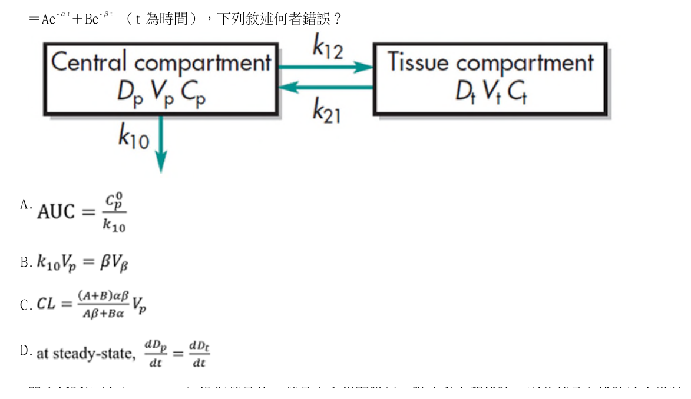
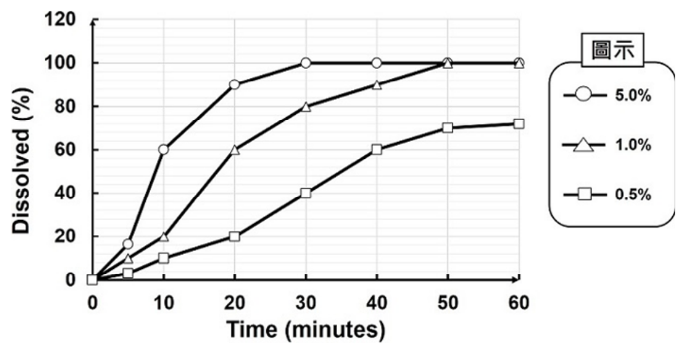

開卷有益 ／
藥師 ／ 藥劑學與生物藥劑學 ／ 115 年115 年藥師藥劑學與生物藥劑學試題與答案
這一頁是民國 115 年藥師藥劑學與生物藥劑學的整份歷屆試題，共 80 題，題目與標準答案出自考選部「國家考試試題及測驗式試題答案」開放資料，其中 76 題附有詳解。以下逐題列出題幹、選項與答案；要計時作答或記錄成績，請用線上練習。
考選部原始場次代碼：115020
線上作答這一科 →
全部 80 題
第 1 題
Q10方法可評估製劑在不同溫度下之架儲期（shelf-life），此方法之理論基礎為何？
（A） Arrhenius equation（B） Clausius-Clapeyron equation（C） Gibbs-Helmholtz equation（D） van der Waals equation答案：（A）
詳解與考點 正解：Q10 方法用不同溫度下反應速率常數的變化來外推製劑架儲期；速率常數與絕對溫度的關係以 Arrhenius equation 為理論基礎，因此可用升溫加速降解來估算較低溫的安定性，故選 A。
B：Clausius-Clapeyron equation 用於描述相平衡或蒸氣壓隨溫度的變化，並非本題以降解速率推估架儲期的核心關係。
C：Gibbs-Helmholtz equation 處理自由能與溫度的熱力學關係，不能直接提供藥品降解速率常數的溫度外推。
D：van der Waals equation 用於修正真實氣體的狀態行為，與製劑化學降解的加速安定性試驗無關。
本題考點：Arrhenius equation——遇到加速安定性試驗與溫度對降解速率的影響時，用此式連結 k 與 T；Q10 method——每升高 10℃ 比較速率變化以推估架儲期時，前提是降解機制在比較範圍內未改變。
第 2 題
有關溶液劑之敘述，下列何者錯誤？
（A） 由一種或多種藥品溶解或分散於一適當溶劑或相互混合溶劑（B） 較固體製劑有更好的給藥準確性，化學安定性也較高（C） 多元醇類例如甘露醇、甘油亦可用為口服溶液之溶劑，以增加溶解、矯味、改善口感及液性（D） 口服給藥之溶液劑可含有芳香劑、甜味劑或著色劑答案：（B）
詳解與考點 正解：本題要求找錯誤敘述。藥物在溶液中直接接觸水與溶氧，通常較固體製劑容易發生水解或氧化；液體劑量又取決於量取操作，不能概括說給藥準確性與化學安定性都更高。因此（B）不正確，故選 B。
A：溶液劑以適當溶劑或互溶混合溶劑使一種或多種藥品形成均一液體，符合其基本製劑概念。
C：選項所列的甘露醇（mannitol）與甘油（glycerin）等多元醇，可作為口服液體製劑的溶媒或助溶系統成分，兼具改善溶解度、甜味、口感及液性等用途（同類的 sorbitol 亦常見於此用途），故此敘述正確。
D：口服溶液劑可依需要加入芳香劑、甜味劑或著色劑以改善接受度；這些是配方輔助成分，並不改變其為溶液劑的本質。
本題考點：溶液劑安定性（solution stability）——比較劑型時，水相會提高水解與氧化風險，不能把溶液劑一概視為較固體安定；口服液體製劑（oral liquid dosage forms）——遇到多元醇時，從助溶、矯味與增加液性判斷其配方角色。
第 3 題 待校
關於有機分子之溶解度，下列敘述何者最不適當？
（A） 具一個極性官能基且總碳鏈長度在5 個碳以下之分子通常可溶於水（B） 具側鏈之分子較對應之直鏈分子通常更不易溶於水（C） 水溶解度通常隨分子量增加而減小（D） 溶質與溶劑之間結構相似者，通常溶解度增加答案：（B）
第 4 題
Ferrous sulfate syrup 所使用之糖漿基劑為何？
（A） citric acid（B） sodium carboxymethyl cellulose（C） sorbitol（D） sodium benzoate答案：（C）
詳解與考點 正解：Ferrous sulfate syrup 的糖漿基劑是 sorbitol。sorbitol 為糖醇，可提供甜味與適當黏度作為口服糖漿的載體，故選 C。
A：citric acid 主要用於酸化、調整 pH 或作為螯合相關配方成分，不是形成糖漿基劑的主要甜味載體。
B：sodium carboxymethyl cellulose 是常用增黏或懸浮用高分子，不負責糖漿基劑的甜味與主體液性。
D：sodium benzoate 的典型用途是防腐，與 sorbitol 作為糖漿基劑的角色不同。
本題考點：糖漿基劑（syrup vehicle）——問糖漿的主體時，找能提供甜味與黏度的糖或糖醇；sorbitol——在口服液體製劑中可兼顧甜味、液性與部分助溶需求，勿與防腐劑或增黏劑混淆。
第 5 題
依中華藥典，有關浸膏劑之敘述，下列何者正確？
（A） 軟塊狀浸膏調整含量時，通常使用經100℃乾燥之澱粉或蔗糖（B） 顛茄粉狀浸膏調整含量時須使用碳酸鎂（C） 膏狀浸膏可用正己烷脫脂（D） 粉狀浸膏之稀釋劑可用葉綠素或焦糖染色答案：（D）
詳解與考點 正解：本題依中華藥典對浸膏劑的特定規定判斷；粉狀浸膏使用稀釋劑時，可用葉綠素或焦糖調整色澤，因此（D）正確，故選 D。
A：經 100℃ 乾燥之澱粉或蔗糖是粉狀浸膏調整含量時所用的稀釋劑，軟塊狀浸膏則以甘油等可維持其軟膏稠度的賦形劑調整；A 把適用的浸膏型態寫錯，浸膏的型態不同，調整含量的規定不能任意互換。
B：碳酸鎂在顛茄粉狀浸膏是規定中「可用」的調整劑之一，而非唯一且強制的選擇；B 以「須使用」的絕對說法陳述，與藥典留有選擇空間的規定不符。
C：藥典對膏狀浸膏並未列有以正己烷脫脂的調整規定；脫脂屬原料或萃取過程可能涉及的處理，將已製成的膏狀浸膏再以正己烷處理，會一併移除脂溶性成分而改變其成分組成。
本題考點：浸膏劑（extracts）——讀標準規格時，將軟塊狀與粉狀浸膏的調整、稀釋規定分開判讀；粉狀浸膏稀釋劑（diluent for powdered extracts）——遇到色澤選項時，先確認是否屬規範允許的調整範圍，不以萃取步驟類推。
第 6 題
有關emulsions 常用賦形劑及其用途之配對，下列何者最適當？
（A） methylcellulose－viscosity enhancer（B） sodium dodecyl sulfate－natural emulsifier（C） casein－synthetic emulsifier（D） tartrazine－sweetening agent答案：（A）
詳解與考點 正解：methylcellulose 是水溶性高分子，可提高外相黏度、減少乳滴移動與聚結機會，因此作為 viscosity enhancer 的配對最適當，故選 A。
B：sodium dodecyl sulfate 是合成的陰離子界面活性劑，不是 natural emulsifier。天然乳化劑通常來自膠質或蛋白質等天然來源。
C：casein 為天然蛋白質，可作為天然乳化劑；錯誤在把其來源與分類說成 synthetic emulsifier。
D：tartrazine 是黃色著色劑，作用是賦色而非提供甜味。色素與 sweetening agent 都常出現在口服製劑，配方功能卻不同。
本題考點：乳劑增黏劑（viscosity enhancer）——需提高外相黏度、降低乳滴移動時，選 methylcellulose 等親水性高分子；乳化劑來源（emulsifier origin）——SDS 為合成界面活性劑，casein 為天然蛋白質，須同時判斷功能與來源。
第 7 題
藥用乳劑（emulsions）如Mineral Oil Emulsion, USP 中常加入酒精，其用途為何？
（A） emulsifier（B） oil phase（C） pH modifier（D） stabilizing agent答案：（D）
詳解與考點 正解：Mineral Oil Emulsion, USP 的乳化劑為 acacia，配方中的酒精則擔任具防腐性的安定劑，抑制微生物生長以維持製劑安定，並兼作 vanillin 的溶媒，故其角色為 stabilizing agent，故選 D。
A：乳化劑的主要工作是降低油水界面張力並形成保護界面膜；酒精在本配方中的指定用途不是擔任 emulsifier。
B：油相是 mineral oil 本身。酒精雖可影響配方溶媒性質，不能因此改列為油相。
C：pH modifier 需以酸、鹼或緩衝系統作為主要判斷依據；酒精在本題所述配方不以調整 pH 為目的。
本題考點：乳劑安定劑（stabilizing agent）——問特定配方中酒精的用途時，應與乳化劑、油相及 pH 調整劑分開辨識；乳劑配方角色（emulsion excipient roles）——先看成分是否直接形成油水界面、構成油相或調 pH，再判斷其功能。
第 8 題
有關使用液化氣體製備兩相系氣化噴霧劑，下列敘述何者最適當？
（A） 不可選用冷卻填充（cold filling）填充推進劑（B） 液化氣體可單獨作為水溶性藥品的溶劑（C） 可用來製備泡沫噴霧劑（D） 藥品通常選用助溶劑而非以界面活性劑來增加藥品溶解度答案：（D）
詳解與考點 正解：液化氣體的兩相系氣化噴霧劑是藥品濃縮液與液化推進劑形成均一液相、上方保有蒸氣相的系統；為使藥品溶入此系統，通常利用助溶劑調整溶解度，而非以界面活性劑形成分散系，故選 D。
A：液化推進劑可以採冷卻填充（cold filling）方式填裝；低溫使推進劑維持液態，故「不可選用」不正確。
B：液化氣體多為非極性或低極性推進劑，不能單獨作為水溶性藥品的有效溶劑；水溶性藥品須另靠適當極性溶媒或助溶系統。
C：泡沫噴霧劑通常需利用乳化或多相結構形成泡沫，與本題的兩相均一液相系統不同。看似都使用液化推進劑，但製劑相態才是分辨關鍵。
本題考點：兩相系氣化噴霧劑（two-phase aerosol）——藥品必須以溶液形式存在時，從助溶劑調整溶解度，不把界面活性劑造成的分散系混入；冷卻填充（cold filling）——遇到液化推進劑填裝時，可由低溫維持液態來判斷其適用性。
第 9 題
有關氣化噴霧劑容器之特性，下列敘述何者最適當？
（A） tin-plated steel 容器比鋁製容器的抗腐蝕能力佳（B） 鋁製容器最容易有洩漏的問題（C） stainless steel 容器通常做成小容量包裝（D） 玻璃容器通常會在外部鍍上塑膠材質來增加抗腐蝕能力答案：（C）
詳解與考點 正解：stainless steel 耐壓且抗腐蝕，但成本較高，氣化噴霧劑容器通常製成小容量包裝；（C）的容器特性配對最適當，故選 C。
A：鋁製容器表面會生成緻密的氧化保護層且可製成無縫罐，抗腐蝕能力優於 tin-plated steel；tin-plated steel 的鍍錫層若受損反而更容易發生腐蝕，A 的比較方向正好相反。
B：鋁製容器可採無縫結構，正可減少接縫相關的滲漏風險；將其說成最容易洩漏不符合其容器設計優點。
D：玻璃容器外鍍塑膠主要是提升耐衝擊與破裂時的安全性，不是用來增加玻璃本身的抗腐蝕能力。
本題考點：氣化噴霧劑容器（aerosol containers）——比較容器時同時看耐壓、抗腐蝕、接縫與容量成本，不能只憑材質名稱判斷；stainless steel——因耐用但成本高，出現小容量包裝的敘述時可作為辨識線索。
第 10 題
有關理想suspension 劑型之特色，下列何者最不適當？
（A） 易於吞服（B） 可使部分藥品維持化學性穩定（C） 沉降快速，不易再分散（D） 易於遮蔽不良味道答案：（C）
詳解與考點 正解：本題要求找最不適當的理想懸液劑特性。理想 suspension 應沉降緩慢，且沉降後能輕易再分散；（C）卻說沉降快速且不易再分散，違反物理安定性要求，故選 C。
A：懸液劑可將難溶性藥物均勻分散於液體中，若粒徑與黏度設計適當，通常有利於吞服，故此敘述可作為理想特性。
B：對在水溶液中容易降解的藥品，改以固體微粒懸浮可減少其溶解後的化學降解，故可提升部分藥品的化學安定性。
D：難溶性藥物未完全溶解時可降低味蕾直接接觸藥物的程度，因此懸液劑常有助於遮蔽不良味道。
本題考點：懸液劑物理安定性（physical stability of suspensions）——以沉降慢、無硬結塊及易再分散作為理想判準；再分散性（redispersibility）——遇到「沉降後」的選項時，判斷是否能經輕搖恢復均勻，而非只看是否會沉降。
第 11 題
口服制酸懸液劑配方如下，其中glycerin 最可能扮演何種角色？ aluminum hydroxide compressed gel 163.4 g sorbitol solution 141.0 mL syrup 46.5 mL glycerin 12.5 mL methylparaben 0.45 g propylparaben 0.15 g flavor qs purified water, to make 500.0 mL
（A） wetting agent（B） thickening agent（C） flocculating agent（D） preservatives答案：（A）
詳解與考點 正解：配方中的 aluminum hydroxide compressed gel 為固體微粒，glycerin 可先潤濕與研磨這些粒子、置換粒子表面與孔隙中的空氣，以利均勻分散；因此最可能作為 wetting agent，故選 A。
B：thickening agent 的主要目的是提高連續相黏度以減慢沉降，通常由高分子或特定增黏系統擔任；glycerin 在此配方的關鍵作用是潤濕粒子。
C：flocculating agent 用於控制粒子形成鬆散絮凝結構，常依賴電解質或特定界面作用；glycerin 不能由其甜味或黏度直接判為絮凝劑。
D：methylparaben 與 propylparaben 才是配方中的 preservatives；glycerin 與這兩者同列時，應由防腐功能區分而非混列為防腐劑。
本題考點：潤濕劑（wetting agent）——遇到難以分散的固體微粒時，找能降低粒子與液體間潤濕障礙、排除附著空氣的成分；懸液劑賦形劑（suspension excipients）——防腐、增黏、絮凝與潤濕須由其對粒子或連續相的直接作用區分。
第 12 題
有關microemulsion 之敘述，下列何者錯誤？
（A） 熱力學安定（B） 目視透明（C） 屬單相系統（D） 可促進藥品經皮吸收答案：（C）
詳解與考點 正解：官方答案為 C；惟 microemulsion 的「單相」稱呼有分類層次爭點：以巨觀外觀常稱為透明、各向同性的單相系統，但以油、水形成奈米尺度分散域來看，並非真正分子層級的單一相。本題採後一層次：油相與水相在界面活性劑與助界面活性劑作用下仍各自成域，巨觀透明與各向同性只說明外觀均一，不等於單相，故將（C）列為錯誤，故選 C。
A：microemulsion 的重要特徵是熱力學安定；在適當組成範圍內可自發形成，與一般僅具動力學安定性的乳劑不同，故此敘述成立。
B：其分散域尺寸遠小於可見光波長時，外觀可呈透明或近透明，因此目視透明是常見辨識線索。
D：microemulsion 的界面活性劑與助界面活性劑系統可改善藥物溶解與皮膚屏障穿透條件，故可用於促進經皮吸收。
本題考點：微乳劑（microemulsion）——先分清巨觀均一性與微觀多域結構；遇到「單相」絕對敘述時，須確認命題教材採用的分類層次；熱力學安定性（thermodynamic stability）——以適當組成下可自發形成且長期均一，區分 microemulsion 與一般乳劑；經皮輸送（transdermal delivery）——判斷促進吸收時，同時看藥物溶解度與界面系統對皮膚屏障的影響。
第 13 題
有關口服乳劑之敘述，下列何者錯誤？
（A） mineral oil emulsion 可由乾膠法製備（B） castor oil emulsion 之油含量會影響所需劑量（C） simethicone emulsion 作為消泡劑，可減輕腸胃脹氣引起的疼痛（D） mineral oil emulsion 和simethicone emulsion 皆可作為瀉劑使用答案：（D）
詳解與考點 正解：本題要求找錯誤敘述。mineral oil emulsion 可作為潤滑性瀉劑，但 simethicone emulsion 的用途是消泡、減少腸胃氣體所致不適，並非瀉劑；因此（D）把兩者都列為瀉劑是不正確的，故選 D。
A：mineral oil emulsion 可用乾膠法（dry gum method）製備；該法先使油相與膠質形成初乳，再逐步加入水相，故此敘述正確。
B：castor oil emulsion 的油含量會決定每一給藥體積所含的 castor oil 量，因而影響所需劑量，故此敘述正確。
C：simethicone 為消泡劑，可降低氣泡表面張力、使氣泡聚合破裂，從而減輕腸胃脹氣造成的疼痛，故此敘述正確。
本題考點：mineral oil emulsion——遇到口服乳劑的瀉劑用途時，連結 mineral oil 的潤滑作用；simethicone——出現消泡、腸胃脹氣與氣泡時判為 antiflatulent，不把減少氣體誤判成瀉下作用；乾膠法（dry gum method）——製備油性口服乳劑時，先形成初乳再逐步加水以建立穩定分散系。
第 14 題
有關軟膏劑製備之敘述，下列何者錯誤？
（A） 含碘製劑須使用橡膠藥刀反覆研合（B） 樟腦可以使用pulverization by intervention 進行混合（C） 秘魯香膠通常須與小量的水進行混合以降低張力（D） 於小規模調製時，可使用調藥刀和軟膏板答案：（C）
詳解與考點 正解：秘魯香膠（balsam of Peru）質地黏稠、疏水，與水並不相容，實務上通常是以少量蓖麻油（castor oil）等油性助研劑混合以降低其黏滯性、方便與其他成分均勻研合，用水來降低張力的描述與其疏水特性不符，故選 C。
A：含碘製劑具氧化性，會腐蝕金屬藥刀，須改用橡膠或塑膠藥刀反覆研合以避免反應，敘述正確。
B：樟腦屬揮發性固體，可利用少量溶劑輔助的 pulverization by intervention 技巧使其細碎並易於混合，敘述正確。
D：小規模調製軟膏時，使用調藥刀與軟膏板進行研合是標準的手工調劑方式，敘述正確。
本題考點：軟膏劑製備中特殊成分的處理技巧——含碘製劑須用橡膠藥刀避免氧化腐蝕、樟腦以 pulverization by intervention 輔助細碎、秘魯香膠因疏水黏稠須以適當溶劑（而非水）降低黏滯性以利混合。
第 15 題
依據中華藥典，有關利用天然膠製成之凝膠劑，下列敘述何者錯誤？
（A） 分散之大分子與液體連續相之間不存在明顯的界線（B） 所形成之膠體為兩相系、具搖變性之凝膠（C） 例如用tragacanth 製成，又稱為黏液（D） 含有均勻內滲至液體中之有機巨分子答案：（B）
詳解與考點 正解：天然膠形成的凝膠由有機巨分子均勻內滲於液體中，屬沒有明顯相界的單相系統；不能把它概括為兩相且具搖變性的凝膠，故選 B。
A：分散的大分子與液體連續相之間沒有清楚可見的界線，正是天然膠凝膠的均勻內滲特徵。
C：tragacanth 為天然膠，可製成黏液狀的凝膠劑，敘述的例子正確。
D：天然膠的有機巨分子吸水膨潤後均勻分布於液體內，與單相膠體的描述相符。
本題考點：單相凝膠（single-phase gel）——看到天然膠或有機巨分子均勻內滲液體時，判為無明顯相界的單相系統；搖變性凝膠（thixotropic gel）——判斷時要看受剪切後黏度可逆下降的行為，不能由天然膠一詞直接推定。
第 16 題
下列何種suppository bases 之熔化溫度最高？
（A） cocoa butter（B） Fattibase（C） Polybase（D） Wecobee W答案：（C）
詳解與考點 正解：判準是基劑的物理性質。Polybase 為 polyethylene glycol 類水溶性栓劑基劑，熔化溫度高於以脂肪酸甘油酯為主的脂性基劑，通常靠在體液中逐漸溶解釋放藥物，故選 C。
A：cocoa butter 的設計目的就是在接近體溫時熔化，熔化溫度不會高於 Polybase。
B：Fattibase 屬脂性栓劑基劑，使用時同樣要求能在生理溫度附近軟化或熔化。
D：Wecobee W 為硬脂性基劑，其熔化行為仍以適合體內使用為原則，並非本組中最高者。
本題考點：栓劑基劑（suppository bases）——脂性基劑多以體溫熔化釋放，水溶性基劑則多以體液溶解釋放；熔化與溶解（melting versus dissolution）——比較基劑時先分清釋放機制，不能把高熔點直接等同於體內釋放較快。
第 17 題
使用cocoa butter 為栓劑基劑時，下列敘述何者正確？
（A） 貯存溫度不得高於攝氏25 度（B） 可用於成人陰道栓劑（C） 可添加phenol 以提高基劑穩定性（D） 於體液中能迅速融化，助於脂溶性藥品快速釋放答案：（B）
詳解與考點 正解：cocoa butter 是可於體溫熔化的脂性栓劑基劑，可依用途配製成人陰道栓劑；成人陰道腔容許的製劑量與這類基劑相容，故選 B。
A：cocoa butter 的熔化範圍約 30～36℃，貯存重點是避免接近熔融範圍及 α、β′ 等晶型轉換而使熔點改變，不能把 25℃寫成其一律適用的絕對上限；實際條件須配合成品規格。
C：phenol 加入 cocoa butter 時可能造成低熔點混合物與軟化，不是提高基劑安定性的作法。
D：cocoa butter 是受體溫影響而熔化，不是在體液中迅速溶解；脂溶性藥物又較易留在脂性基劑中，未必能快速分配到水相釋放。
本題考點：可可脂栓劑基劑（cocoa butter base）——要以體溫熔化與脂性分配行為判斷用途，不把熔化誤當成水相溶解；脂性基劑的藥物釋放（drug release from oleaginous base）——脂溶性藥物與基劑親和力高時，轉入體液的分配常是限制步驟。
第 18 題
製作栓劑過程中，常規使用的模具材料，下列那個金屬材質最不適合？
（A） 鐵（B） 鋁（C） 黃銅（D） 不銹鋼答案：（A）
詳解與考點 正解：栓劑模具會反覆接觸熔融基劑、清洗與乾燥，最需要避免生鏽與腐蝕。鐵的耐蝕性最差，鏽蝕會污染製劑並造成模具表面不平，故選 A。
B：鋁可形成保護性氧化層，耐蝕性與加工性均較鐵適合作為常規模具材料。
C：黃銅具有足夠的加工性及耐蝕性，可用於栓劑模具。
D：不銹鋼耐腐蝕、表面易清潔，反而是適合反覆使用的模具材質。
本題考點：栓劑模具材料（suppository mold materials）——選材時優先看耐腐蝕、表面平整與可清潔性；製劑污染控制（product contamination control）——會生鏽或剝落的接觸面可能把異物帶入製劑，應先排除。
第 19 題
將鈣鹽加入含有藻酸（alginic acid）組成之凝膠劑中，其主要目的為何？
（A） 改變酸鹼度（B） 改變黏稠度（C） 使生成沉澱（D） 調整溶解度答案：（B）
詳解與考點 正解：Ca2+可與 alginate 鏈上的羧酸根形成離子交聯，使分子網絡更緊密；主要結果是凝膠強度與黏稠度改變，故選 B。
A：加入鈣鹽可能伴隨酸鹼度變化，但其在藻酸凝膠中的主要用途不是調整 pH。
C：Ca2+造成的是可維持結構的交聯網絡，不是以產生無功能沉澱為目的。
D：藻酸鹽凝膠化著重於高分子鏈間的交聯，並非用來調整藥物的溶解度。
本題考點：藻酸鹽交聯（alginate cross-linking）——遇到二價陽離子與 alginate 時，先判斷是否形成離子網絡並提高凝膠黏度；凝膠化與沉澱（gelation versus precipitation）——有連續網絡且改變流變性時，應判為凝膠化而非單純沉澱。
第 20 題
有關hydroxypropyl methylcellulose 作為膠囊殼材質之敘述，下列何者正確？
（A） 結構具有交聯的潛在性（B） 交聯會增加體外溶離（C） 可在溫度低於30℃測試溶液中崩解（D） 完全不具氣體通透性答案：（C）
詳解與考點 正解：HPMC 為非明膠性的纖維素衍生物，不具有明膠膠囊殼常見的交聯延遲崩解問題；在低於 30℃的測試溶液中仍可進行崩解評估，故選 C。
A：HPMC 不具明膠蛋白質交聯的典型潛在性，不能以交聯傾向作為其膠囊殼特色。
B：若膠囊殼發生交聯，水分進入與聚合物鬆散都會受阻，通常使崩解或溶離變慢，不會增加體外溶離。
D：HPMC 膜仍有一定氣體通透性，不能稱為完全不具通透性。
本題考點：HPMC 膠囊殼（hydroxypropyl methylcellulose capsule shell）——需要避免明膠交聯造成的崩解遲延時，可從非明膠性殼材考量；交聯對溶離的影響（cross-linking effect on dissolution）——聚合物網絡越緊密，水化與崩解通常越受限。
第 21 題
依中華藥典，下列何種口服固體製劑，不須進行崩散試驗？①咀嚼錠 ②延釋錠 ③持釋錠
（A） ①②③（B） 僅①③（C） 僅②③（D） 僅①②答案：（A）
詳解與考點 正解：咀嚼錠先經咀嚼而非完整吞服；延釋錠及持釋錠則以預定釋放行為為規格，三者均不以一般崩散試驗作為必要試驗，故選 A。
B、C、D：三個組合都漏列一種不須一般崩散試驗的劑型。（B）漏列延釋錠；（C）漏列咀嚼錠；（D）漏列持釋錠，故皆不是完整組合。
本題考點：崩散試驗（disintegration test）——一般立即釋放口服固體製劑才以崩散作為重要品質指標，先辨識是否為例外劑型；改良釋放製劑（modified-release dosage forms）——延釋與持釋產品應以其預定釋放表現評估，不能用一般崩散結果取代。
第 22 題
有關非水性注射劑載體之敘述，下列何者最不適當？
（A） 選用之載體不可以對於人體具有刺激性（B） USP 要求若使用fixed vegetable oil 作為注射劑載體時，經冷卻至10℃仍能保持澄清（C） 其流動性（fluidity）通常決定於所含不飽和脂肪酸中之比例（D） 可含少量之mineral oil 或paraffin 以調整流動性答案：（D）
詳解與考點 正解：非水性注射劑的油性載體必須可被人體安全耐受並具適當流動性。mineral oil 與 paraffin 不易被組織代謝或吸收，注射後可能長留組織引發不良反應，因此不應用來調整載體流動性，故選 D。
A：注射用載體不應對人體造成刺激，這是選擇載體的基本安全條件。
B：fixed vegetable oil 作注射劑載體時，低溫後仍須維持澄清，以避免析出或混濁影響製劑品質。
C：油脂的不飽和脂肪酸比例會影響熔點與流動性，比例較高時通常較易維持液態流動。
本題考點：非水性注射劑載體（nonaqueous injection vehicles）——先排除不可吸收、易刺激或會殘留組織的油類；固定植物油品質（fixed vegetable oil quality）——評估時兼看低溫澄清度與流動性，不能只看是否為油性液體。
第 23 題
下列何者屬於吸收型軟膏基劑？
（A） hydrophilic ointment（B） hydrophilic petrolatum（C） polyethylene glycol ointment（D） white ointment答案：（B）
詳解與考點 正解：吸收型軟膏基劑的判別重點是原本為油性基質，卻能吸收水相形成 W/O 型系統。hydrophilic petrolatum 具此吸水能力，故選 B。
A：hydrophilic ointment 屬可用水洗除的基劑，已偏向 O/W 型系統，不是吸收型基劑。
C：polyethylene glycol ointment 為水溶性基劑，依靠聚合物本身溶於水，不以吸水形成乳劑為特徵。
D：white ointment 為烴類油性基劑，缺乏吸收水相所需的乳化能力。
本題考點：吸收型軟膏基劑（absorption ointment base）——油性基劑若能吸收水並形成 W/O 系統，即歸入吸收型；軟膏基劑分類（ointment-base classification）——先依吸水能力與乳劑型態區分，再判斷是否可水洗。
第 24 題
下列製劑何者須以單軟膏加熱熔化後，再篩入主成分粉末，攪拌調均製得？
（A） 硫磺軟膏（B） 培尼皮質醇軟膏（C） 氧化鋅調製軟膏（D） 水楊酸軟膏答案：（D）
詳解與考點 正解：水楊酸軟膏的主成分以細粉分散於單軟膏中，標準小量調製時先加熱熔化基劑，再將粉末篩入並持續攪拌，才能減少粗粒和沉降，故選 D。
A：硫磺軟膏通常先將硫磺細粉與部分基劑研合，再逐量混入，不是水楊酸軟膏的熔融篩入程序。
B：培尼皮質醇軟膏的主成分量較小，重點在預先均勻分散後加入基劑，不能以熔化單軟膏後篩入粉末作為其標準調製法。
C：氧化鋅調製軟膏屬高固體含量粉體分散製程，應先使粉末充分潤濕、研合以防粗粒，不是本題所述程序。
本題考點：軟膏劑熔合法（fusion method）——不溶性細粉需在熔融基劑中均勻分散時，可用篩入與攪拌降低粗粒；研合法（incorporation method）——高粉體負荷或須先潤濕的處方，先研合再逐量加入基劑較能維持均勻性。
第 25 題
下列固體劑型之賦形劑種類與其舉例之配對，何者正確？
（A） pH modifier：sodium silicate（B） wet binder：silicon dioxide（C） filler or diluent：magnesium stearate（D） disintegrant：aluminum lake答案：（A）
詳解與考點 正解：配對要以賦形劑的主要功能判斷。sodium silicate 為強鹼弱酸鹽，溶於水後水解呈鹼性，可用來提高並穩定製劑微環境的 pH，與選項所列的 pH modifier 功能一致，故選 A。
B：silicon dioxide 的常見角色是助流劑或吸附劑，不是以提供濕式造粒黏結力為主的 wet binder。
C：magnesium stearate 用於降低粉體與沖模間摩擦，屬潤滑劑，不是 filler 或 diluent。
D：aluminum lake 為著色劑，不能藉由吸水膨潤或破裂作用作為 disintegrant。
本題考點：固體劑型賦形劑（solid dosage-form excipients）——先問賦形劑在製程或錠劑中解決何種問題，再配對功能名稱；潤滑與崩散（lubrication versus disintegration）——降低摩擦的是 lubricant，促進水分進入與錠劑破裂的才是 disintegrant。
第 26 題
依中華藥典規定，有關膠囊含量均一度，除有特殊的要求外，下列敘述何者正確？
（A） 若前10 個膠囊之允收值 15％，則符合含量均一度規定（B） 若允收值＜10％，則測試另20 個膠囊，計算允收值（C） 若30 個膠囊之最終允收值＜15％，且無任一個膠囊含量超出70％～125％（D） 若30 個膠囊之最終允收值＜10％，且無任一個膠囊含量超出75％～125％答案：（A）
詳解與考點 正解：依含量均一度的階段判定，先測 10 個膠囊，允收值不超過 15％即符合規定，故（A）正確；允收值超過 15％時才加測 20 個，再以 30 個膠囊的最終允收值不超過 15％、且無任一膠囊含量落在 75％～125％之外作最終判定，故選 A。
B：初測允收值低於 10％代表結果可接受，不是因此加測 20 個膠囊；追加試驗是在初測允收值超過 15％、未符合允收條件時才進行。
C：最終判定的個別單位界限是 75％～125％，C 把下限誤寫成 70％，與一般規格的設定不符。
D：把最終允收值固定為低於 10％並非一般含量均一度的允收線，30 個膠囊的最終允收線同樣是 15％；D 所列的個別單位 75％～125％雖然正確，仍因這個數字而不成立。
本題考點：含量均一度（content uniformity）——先依初測允收值判斷是否需要擴增樣品，不把低允收值誤認為加測條件；允收值（acceptance value）——判讀時同時看整體允收值與個別劑量單位界限，任一項不符都不能只靠平均表現通過。
第 27 題
硬膠囊殼組成中，通常不會添加下列何項成分？
（A） gelatin（B） sugar（C） titanium dioxide（D） magnesium stearate答案：（D）
詳解與考點 正解：硬膠囊殼的基本材料是 gelatin，並可依外觀與遮光需求加入 sugar 或 titanium dioxide；magnesium stearate 的主功能是降低粉體與模具摩擦的潤滑劑，通常用於內容物而非膠囊殼，故選 D。
A：gelatin 提供硬膠囊殼的成膜與定型能力，是主要結構材料。
B：sugar 可作為膠囊殼配方中的輔助成分，並非硬膠囊殼中一概不添加的物質。
C：titanium dioxide 可作為不透明劑，協助遮光並調整膠囊外觀。
本題考點：硬膠囊殼組成（hard gelatin capsule-shell composition）——區分殼材與內容物時，殼材著重成膜、著色與遮光；潤滑劑（lubricant）——magnesium stearate 用於改善粉體流動與降低摩擦，通常歸在填充內容物的配方。
第 28 題
依據中華藥典，有關口服給藥劑型之溶離試驗法裝置Ⅰ，下列敘述何者錯誤？
（A） 液溫維持37±0.5℃（B） 指定轉速誤差應小於±4％（C） 籃底與溶離杯底應距離20±2 mm（D） 網籃孔徑為0.36～0.44 mm答案：（C）
詳解與考點 正解：裝置Ⅰ為旋轉籃法，網籃底部與溶離杯內底的設定距離為 25 ± 2 mm；20 ± 2 mm 會使網籃位置過低，不符合裝置幾何條件，故選 C。
A：溶離液溫維持在 37 ± 0.5℃，用以模擬體內溫度並維持試驗條件一致。
B：指定轉速須控制在容許誤差內，避免攪拌強度差異改變溶離速率。
D：網籃孔徑的範圍符合裝置Ⅰ使用的網籃規格，能兼顧藥品暴露與介質流通。
本題考點：溶離試驗裝置Ⅰ（dissolution apparatus 1）——遇到旋轉籃法時，分別核對溫度、轉速、網籃位置與網目規格；溶離試驗再現性（dissolution-test reproducibility）——幾何位置與攪拌條件都會改變介質流動，數值規格不可互相替換。
第 29 題
依中華藥典規定，於測定錠劑之乾燥減重時，其所取錠劑粉末不得少於幾錠？
（A） 3（B） 4（C） 5（D） 6答案：（B）
詳解與考點 正解：題目問的是所取粉末的最低來源錠數；依中華藥典錠劑乾燥減重試驗的取樣規定（比照 USP〈731〉），須取不少於 4 錠研成的粉末，故選 B。
A：3 錠是四個選項中唯一低於 4 錠門檻者，取樣量不足，無法符合此試驗的取樣要求。
C：5 錠雖然超過 4 錠的最低數量，但不是題目所問的規定下限。
D：6 錠同樣多於 4 錠、可增加取樣量，卻不是規定的最少錠數。
本題考點：乾燥減重（loss on drying）——題幹問「不得少於」時，先找法定或標準規格中的最低取樣量；藥典試驗取樣（pharmacopoeial sampling）——高於最低量不會改變題目所問的門檻，須區分可行做法與指定下限。
第 30 題
下列何項措施對直接壓錠過程中，可能造成錠劑capping 現象之改善效益最小？
（A） 使用加壓進料器（B） 常用除粉器清潔杵（C） 減少造粒過程細粉的比例（D） 增加黏合劑的含量答案：（C）
詳解與考點 本題經考選部公告一律給分。直接壓錠capping（頂裂）現象之改善措施中，(D)增加黏合劑含量對改善capping效益應最為顯著，故理論上非最小效益者；至於效益「最小」之選項，(A)使用加壓進料器主要改善填充均勻度、(B)常用除粉器清潔杵僅移除表面附著粉末，兩者對capping根本成因（顆粒結合力不足、空氣包覆）之改善效益孰輕孰重，各版教材見解不一，致使何者為「效益最小」之判斷產生分歧而生爭議。(C)減少造粒過程細粉比例可降低空氣包覆機率，改善效益明確較大可排除。作答以現行藥劑學製錠學理論為準。
第 31 題
有關錠劑劑型單元含量均一度測試之敘述，下列何者錯誤？
（A） 有一未包衣錠劑，總重為100 毫克，含有主成分50 毫克，可利用重量差異試驗法測試（B） 有一膜衣錠，總重為100 毫克，含有主成分30 毫克，可利用重量差異試驗法測試（C） 未包衣錠劑利用重量差異試驗法測試時，應先取錠劑20 錠，分別準確稱定，計算錠劑重量之相對標準偏差（D） 有一未包衣錠劑，總重為100 毫克，含有主成分30 毫克，可利用含量均一度試驗法測試答案：（C）
詳解與考點 正解：重量差異試驗的適用性與錠劑包衣型態、主成分絕對量及占比有關；未包衣錠的初始重量差異判定取樣數為 10 錠，不是 20 錠，故選 C。
A：重量差異試驗的適用門檻為主成分 ≥ 25 mg 且占錠重 ≥ 25％。未包衣錠總重 100 mg、主成分 50 mg 時，50 mg ≥ 25 mg、占錠重 50％ ≥ 25％，主成分量與所占比例均符合以重量差異試驗評估的條件。
B：膜衣錠同樣適用此門檻。總重 100 mg、主成分 30 mg 時，30 mg ≥ 25 mg、占錠重 30％ ≥ 25％，故可依其主成分量與比例使用重量差異試驗。
D：未包衣錠即使符合重量差異試驗的適用條件，仍可採較直接的含量均一度試驗評估，敘述可成立。
本題考點：劑量單元均一度（uniformity of dosage units）——先依劑型、主成分量與占比判斷能否採重量差異法，未包衣錠與膜衣錠須同時滿足主成分 ≥ 25 mg 與占錠重 ≥ 25％，未達門檻者改用含量均一度試驗；重量差異試驗（weight variation test）——須依標準取樣程序判讀，初始判定取 10 錠並計算可接受值（acceptance value），不能把後續或其他試驗的取樣數混入初始判定。
第 32 題
有關硬明膠膠囊與軟明膠膠囊之膠囊殼比較，後者之特色為：
（A） 組成成分中通常含多元醇，如山梨醇等，主要用以增加透明度（B） 組成成分中蔗糖含量約等同於硬膠囊殼（C） 無需考慮濕度條件進行含量分析（D） 其大小及形狀選擇較多元，較不受型號及規格限制答案：（D）
詳解與考點 正解：軟明膠膠囊可依模具設計製成圓形、橢圓形或長橢圓等多種外形，尺寸也可調整；相較有固定號數的硬明膠膠囊，其大小與形狀更具彈性，故選 D。
A：山梨醇等多元醇在軟明膠膠囊殼中主要作為 plasticizer，作用是增加柔軟度與可塑性，不是增加透明度。
B：硬明膠膠囊殼的組成以 gelatin 與水為主，基本不含蔗糖；軟明膠膠囊殼則含有較多 plasticizer 與水分平衡，並可在咀嚼型製品中另添少量糖類。兩者的糖類含量本就不相當，選項所稱「約等同」與事實不符。
C：膠囊殼含水量會影響重量與含量分析結果，軟明膠膠囊仍須考慮濕度條件。
本題考點：軟明膠膠囊（soft gelatin capsule）——判斷其特色時看 plasticizer、含水量與可設計的外形，不只看 gelatin；增塑劑（plasticizer）——加入聚合物殼材是為了提高柔韌性與成型性，不把其主要功能誤認為改變透明度。
第 33 題
生物製劑中安定劑與其作用之配對，下列何者錯誤？
（A） leucine—抑制aggregation（B） ascorbic acid—維持蛋白質結構穩定（C） EDTA—移除金屬離子以抑制氧化反應（D） ethanolamine—作為cryoprotectant答案：（D）
詳解與考點 正解：ethanolamine 的主要用途是調整 pH 或作為緩衝系統成分，非保護蛋白質於冷凍或凍乾壓力下的 cryoprotectant；因此此配對錯誤，故選 D。
A：leucine 可降低蛋白質在介面或乾燥過程中的聚集傾向，與抑制 aggregation 的作用相符。
B：ascorbic acid 具有抗氧化作用，可減少氧化造成的蛋白質結構損傷，因而有助於維持安定性。
C：EDTA 螯合金屬離子，可抑制金屬催化的氧化反應，配對正確。
本題考點：生物製劑安定劑（biologic-product stabilizers）——先依安定劑處理的是聚集、氧化、pH 或冷凍壓力來配對；冷凍保護劑（cryoprotectant）——判斷時要看其是否在冷凍或凍乾過程保護蛋白質結構，不能把一般緩衝成分誤列入。
第 34 題
破傷風類毒素可經下列何種試劑處理C. tetani 減毒而成？
（A） 甲醛（B） 0.1N HCl 溶液（C） 95％冷酒精（D） PEG 400答案：（A）
詳解與考點 正解：破傷風類毒素的製備關鍵是將 C. tetani 所產生的毒素去毒化，同時保留可誘發免疫反應的抗原性。甲醛可使毒素蛋白的反應性基團交聯而失去毒性，形成可作疫苗使用的類毒素，故選 A。
B：0.1 N HCl 溶液的強酸處理會使蛋白質結構大幅變性，不能作為保留類毒素免疫原性的標準去毒步驟。
C：95% 冷酒精主要用於沉澱或脫水等處理，並不是將破傷風毒素轉為類毒素的試劑。
D：PEG 400 是聚乙二醇類賦形劑或溶媒，並不具有將毒素去毒化成類毒素的作用。
本題考點：類毒素（toxoid）——判斷疫苗製備時，找能去除毒性但保留抗原決定基的處理；甲醛去毒化（formaldehyde detoxification）——遇到細菌外毒素製成類毒素時，優先連結到甲醛處理，而非單純酸、酒精或溶媒。
第 35 題
依中華藥典，有關「非人來源抗T 淋巴細胞免疫球蛋白」製劑之敘述，下列何者正確 ？
（A） 主要含免疫球蛋白IgE（B） 為主動免疫劑（C） 最終原液須加抗菌防腐劑（D） 可為凍乾製劑答案：（D）
詳解與考點 正解：非人來源抗 T 淋巴細胞免疫球蛋白是由已免疫動物取得的抗體製劑，判斷關鍵在它提供現成抗體，而非讓受用者自行產生免疫反應。依中華藥典，此製劑可製成凍乾製劑，故選 D。
A：此類製劑的主要抗體成分是免疫球蛋白 IgG，不是以介導第一型過敏反應的 IgE 為主。
B：輸注外源抗體是被動免疫，保護作用來自已製備完成的抗體，不是主動免疫劑誘發的體內抗體生成。
C：無菌製備與適當容器封裝是注射用生物製劑的要求，但抗菌防腐劑不是最終原液一律必加的條件。
本題考點：被動免疫（passive immunization）——看到直接給予免疫球蛋白時，判作提供現成抗體，而非主動免疫；免疫球蛋白製劑（immunoglobulin preparation）——區分主要 IgG 抗體製劑與 IgE 的過敏反應角色；凍乾製劑（lyophilized preparation）——遇到蛋白質製劑的劑型問題時，凍乾是提高貯存安定性的可用設計。
第 36 題
有關生物相似藥（biosimilar）之敘述，下列何者最適當？
（A） 蛋白結構需與原廠生物製劑完全一致（B） 必須較原廠生物製劑藥更有效始能上市（C） 價格可較原廠生物製劑低（D） 不需進行人體臨床實驗答案：（C）
詳解與考點 正解：生物相似藥的判準是與參考生物製劑具有高度相似性，且在安全性、純度與效力上沒有具臨床意義的差異；它不是以較原廠藥更有效為目標。開發成本與上市後競爭可使價格較原廠生物製劑低，故選 C。
A：生物製劑結構複雜且製程具有自然變異，生物相似藥須證明高度相似，並非每一個蛋白質結構特徵都要完全一致。
B：生物相似藥要建立的是可比性，不是優效性；若必須更有效，便是在要求另一個治療效益主張。
D：人體研究可依整體證據調整範圍，但仍須以人體藥動學、藥效學、免疫原性或其他臨床比較資料建立可比性，不能一概免除。
本題考點：生物相似性（biosimilarity）——判斷時看高度相似與無具臨床意義差異，不用完全相同或更有效的標準；可比性研究（comparability exercise）——分析、非臨床與人體比較證據要整合判讀，不能只靠單一結構或單一療效試驗。
第 37 題
10 mL 之10％二水氯化鈣（CaCl2•2H2O）溶液中，含有多少mEq 的鈣？（二水氯化鈣的分子量為147）
（A） 6.8（B） 13.6（C） 27.2（D） 40.8答案：（B）
詳解與考點 正解：10% 溶液表示每 100 mL 含 10 g 二水氯化鈣，因此 10 mL 含二水氯化鈣 1 g。其物質量為 1 g / 147 g/mol = 0.00680 mol = 6.80 mmol；每 1 mmol 的 Ca2+ 帶 2 mEq，故鈣當量為 6.80 mmol × 2 mEq/mmol = 13.6 mEq，故選 B。
A：6.8 是二水氯化鈣的 mmol 數，尚未乘上 Ca2+ 的二價當量因子，不能直接當作 mEq。
C：27.2 mEq 相當於將 Ca2+ 的當量因子多乘一次；1 mmol Ca2+ 已等於 2 mEq，不是 4 mEq。
D：40.8 mEq 不符合 10 mL 僅含 1 g CaCl2·2H2O 的物質量與二價鈣離子換算。
本題考點：毫當量（milliequivalent, mEq）——離子題先算 mmol，再乘離子價數取得 mEq；二水鹽分子量（hydrate molecular weight）——題目給的是 CaCl2·2H2O 時，分母必須用含結晶水的分子量，不能改用無水鹽。
第 38 題
對熱不安定的注射溶液，最適合以下列那一個方法進行滅菌？
（A） 高壓蒸氣滅菌法（B） 過濾滅菌法（C） 乾熱滅菌法（D） 環乙烯滅菌法答案：（B）
詳解與考點 正解：對熱不安定的注射溶液，關鍵是避免以高溫破壞藥品。過濾滅菌可在不加熱成品的情況下移除微生物，並於無菌條件下分裝，最適合此類溶液，故選 B。
A：高壓蒸氣滅菌以高溫濕熱達成滅菌，熱不安定藥品可能在處理過程中降解。
C：乾熱滅菌所需溫度更高，通常用於耐熱玻璃器材、金屬或油性物質，不適合熱敏感注射溶液。
D：氣體滅菌主要適用於不耐熱的器材或包材；直接用於注射溶液會有殘留物與製程適用性的問題。
本題考點：過濾滅菌（sterilizing filtration）——成品為熱敏感溶液時，以無菌過濾搭配無菌分裝判斷；濕熱與乾熱滅菌（moist heat and dry heat sterilization）——先看製劑能否耐受高溫，再選熱滅菌或非熱方法。
第 39 題
依中華藥典，注射劑中「細菌內毒素檢驗法」之敘述，下列何者最不適當？
（A） 使用之BET 試劑是用Limulus polyphemus 的阿米巴變形細胞水性抽提液（amoebocyte lysate）製成（B） 共有三種檢驗法包含凝膠法、濁度法與呈色法，若三種檢驗結果相異以濁度法結果做最後判定（C） 檢驗法中之凝膠法包含限量試驗與定量試驗（D） 當試驗條件改變而可能影響結果時，應進行干擾因子試驗答案：（B）
詳解與考點 正解：凝膠法、濁度法與呈色法都是以鱟試劑反應的不同終點檢測內毒素；依藥典規定，三種方法的結果有爭議時，除另有規定外以凝膠法之結果為最後判定，而非濁度法。（B）把仲裁方法寫成濁度法即為錯誤，最不適當；方法適用性、干擾因子與試驗條件屬前置驗證，不是仲裁依據，故選 B。
A：BET 試劑可由 Limulus polyphemus 的阿米巴變形細胞水性抽提液製成，該敘述符合鱟試劑的來源。
C：凝膠法可作限量試驗，也可藉由終點判讀進行定量試驗，兩種用途都屬凝膠法的應用。
D：試驗條件改變若可能影響內毒素檢測結果，須做干擾因子試驗，以確認方法在該樣品條件下適用。
本題考點：細菌內毒素檢驗（bacterial endotoxins test, BET）——三種檢驗法都要先確認方法適用性，不能以方法名稱預設優先順序；干擾因子試驗（interfering factors test）——樣品、稀釋倍數或條件改變可能影響反應時，先驗證回收與干擾再判讀結果。
第 40 題
依中華藥典規定，眼用懸液劑所含粒子為避免刺激造成過度流淚，其粒徑通常小於多少μm？
（A） 1（B） 10（C） 25（D） 50答案：（B）
詳解與考點 正解：眼用懸液劑的粒子若過大，會造成砂礫感、刺激與反射性流淚。依中華藥典，為減少這類刺激，所含粒子通常應小於 10 μm，故選 B。
A：1 μm 比規定的通常上限嚴格許多，不能作為本題所問的粒徑標準。
C、D：25 μm 與 50 μm 都超過眼用懸液劑通常的小粒徑要求，較易造成機械性刺激與過度流淚。
本題考點：眼用懸液劑粒徑（ophthalmic suspension particle size）——判斷眼用懸液劑時，粒子越大越容易造成刺激，需記住通常小於 10 μm；眼部刺激與流淚（ocular irritation and lacrimation）——遇到粒徑選項時，以降低角膜與結膜的砂礫感為判準。
第 41 題
下列何項間質材料製成之眼用插入劑，藥品釋放完畢後仍須將插入劑自結膜下取出？
（A） 羥丙纖維素（B） 乙基纖維素（C） 聚丙烯酸（D） 玻尿酸答案：（B）
詳解與考點 正解：眼用插入劑是否須取出取決於基材在淚液中會不會溶解或侵蝕。乙基纖維素是水不溶性的疏水性聚合物，藥物釋放後基材仍留在結膜囊，因此必須取出，故選 B。
A：羥丙纖維素具親水性，可逐漸吸水、溶解或侵蝕，不是藥物釋放後仍完整留存的典型基材。
C：聚丙烯酸可吸水膨潤並形成具黏著性的水凝膠，並非本題所指必須以完整插入劑取出的水不溶性材料。
D：玻尿酸是親水性高分子，可在淚液環境中水合並逐漸分散或降解，不具乙基纖維素的長期不溶留存特性。
本題考點：眼用插入劑（ocular insert）——先判材料是否水溶、可侵蝕或可生物分解，決定釋藥後是否需取出；乙基纖維素（ethylcellulose）——遇到水不溶性基材時，聯結到非侵蝕型釋放與移除需求。
第 42 題
下列何種眼用溶液劑的防腐劑不能使用高壓蒸氣滅菌，以免被分解？
（A） benzalkonium chloride（B） phenylmercuric acetate（C） chlorobutanol（D） thimerosal答案：（C）
詳解與考點 正解：眼用溶液劑若以高壓蒸氣滅菌，防腐劑必須能耐受濕熱。chlorobutanol 對高溫蒸氣的安定性較差，受熱可能分解，因此不能以高壓蒸氣滅菌，故選 C。
A：benzalkonium chloride 為四級銨鹽類防腐劑，對濕熱安定，可與眼用溶液一同高壓蒸氣滅菌，不屬本題所指會因高壓蒸氣而分解的防腐劑，不能據此排除蒸氣滅菌。
B：phenylmercuric acetate 屬有機汞類防腐劑，可耐受一般高壓蒸氣滅菌條件，不具 chlorobutanol 所具有的濕熱分解問題，故非本題答案。
D：thimerosal 亦屬有機汞類、對熱相對安定的防腐劑，可承受高壓蒸氣滅菌；分辨關鍵在 chlorobutanol 的熱安定性——它是三氯三級醇，受熱且在中性偏鹼條件下水解生成鹽酸而失效，故非本題所問的高壓蒸氣滅菌禁忌防腐劑。
本題考點：眼用製劑防腐劑（ophthalmic preservatives）——選擇滅菌法時，先檢查防腐劑與藥品是否耐受濕熱；chlorobutanol 熱安定性（chlorobutanol thermal stability）——題幹出現高壓蒸氣滅菌時，將其辨識為可能受熱分解的成分。
第 43 題
有關注射劑之敘述，下列何者錯誤？
（A） 為防止氧化而填充氮氣（B） 為溶解度需求而添加花生油成分（C） 為增加抑菌效果添加防腐劑（D） 為了呈現特殊顏色而添加著色劑答案：（D）
詳解與考點 正解：本題問的是注射劑添加物中何者沒有合理的製劑目的。著色劑僅為呈現特殊顏色，不能改善注射劑的療效、安定性、溶解度或無菌品質，且增加不必要的安全風險，因此此敘述錯誤，故選 D。
A：以氮氣置換容器頂空中的氧氣，可減少易氧化成分與氧接觸，是注射劑防止氧化的可用作法。
B：花生油可作油性注射劑的非水性溶媒，協助溶解脂溶性藥品，具有溶解度上的製劑目的。
C：多劑量注射劑可在適當條件下添加防腐劑抑制微生物生長；防腐劑不能取代無菌製備，但此用途本身正確。
本題考點：注射劑賦形劑（parenteral excipients）——每一添加物都要能對溶解度、安定性或微生物控制提出製劑目的；注射劑著色劑（colorants in parenterals）——若僅為外觀著色且無治療或品質必要性，應判為不適當。
第 44 題
下列何者可作為眼用製劑之黏稠劑？① methylcellulose ② hydroxypropyl methylcellulose ③ polyvinyl alcohol ④ ethylcellulose
（A） 僅①②（B） ②③④（C） ①②③（D） 僅③④答案：（C）
詳解與考點 正解：眼用製劑的黏稠劑應能在水性淚液環境中增加黏度並延長停留時間。methylcellulose、hydroxypropyl methylcellulose 與 polyvinyl alcohol 都可作此用途；ethylcellulose 為疏水性且水不溶，不適合作為眼用水性製劑的黏稠劑，故選 C。
A：僅列 methylcellulose 與 hydroxypropyl methylcellulose，漏掉同樣可增加眼用製劑黏度的 polyvinyl alcohol。
B：納入 ethylcellulose 而遺漏 methylcellulose；分辨關鍵在 ethylcellulose 水不溶，不能列入本題的眼用黏稠劑組合。
D：同樣錯在納入 ethylcellulose，且漏掉 methylcellulose 與 hydroxypropyl methylcellulose，組合不完整。
本題考點：眼用黏稠劑（ophthalmic viscosity enhancers）——選材料時看其是否可在水性淚液中水合增稠；纖維素衍生物（cellulose derivatives）——methylcellulose 與 hydroxypropyl methylcellulose 可用於水性增稠，乙基纖維素因水不溶要排除。
第 45 題
陰道遞送的Crinone Gel 除了含有progesterone 外，還添加了何種高分子使其具備生物黏著之長效作用？
（A） polyethylene（B） polycarbophil（C） polypropylene glycol（D） polyisoprene答案：（B）
詳解與考點 正解：Crinone Gel 的長效設計要靠能與陰道黏膜形成生物黏著的高分子。polycarbophil 是具羧基的交聯聚丙烯酸類高分子，可吸水膨潤並與黏膜交互作用，延長 progesterone 在給藥部位的停留，故選 B。
A：polyethylene 是疏水性聚合物，不具 polycarbophil 以羧基與黏膜形成強生物黏著的特性。
C：polypropylene glycol 不具 polycarbophil 的交聯羧基網絡，不能作為本題所問的生物黏著長效高分子。
D：polyisoprene 為疏水性彈性體，缺乏在水性黏液中膨潤並形成黏膜黏著層的條件。
本題考點：生物黏著（bioadhesion）——長效黏膜給藥時，找能吸水膨潤並與黏液層交互作用的高分子；polycarbophil——遇到陰道凝膠的長效停留設計時，辨識其為具生物黏著性的交聯聚丙烯酸材料。
第 46 題 待校
一藥品裸錠以cellulose acetate phthalate 包衣後，於pH 1.2 的媒液中進行溶離試驗，其結果最可能是下 列何圖？
答案：（A）
第 47 題
有關溶蝕型緩釋（slowly eroding）劑型的敘述，下列何者最不適當？
（A） hydroxypropyl methylcellulose 常被使用為親水性基質（B） 作為親水性基質的聚合物形成膠質層的速度不可太快，會阻礙藥品釋放（C） 作為親水性基質的聚合物在劑型中所占比例越高，藥品釋放越慢（D） 劑型中其他成分如黏合劑或崩散劑也會影響藥品釋放速率答案：（B）
詳解與考點 正解：溶蝕型緩釋劑型的親水性基質必須先吸水水合，形成連續膠質層來控制擴散與基質侵蝕。形成膠質層不是單純越慢越好；及時且均勻的膠層形成是維持緩釋的條件，因此說形成速度不可太快、否則會阻礙藥品釋放，作為一般規則並不適當，故選 B。
A：hydroxypropyl methylcellulose 可吸水膨潤形成親水性膠質基質，是常用的緩釋材料。
C：親水性基質聚合物比例提高時，膠層通常更厚或更黏稠，藥品擴散路徑增加，釋放速率會變慢。
D：黏合劑、崩散劑等其他賦形劑會改變孔隙、吸水與基質結構，因此也會影響藥品釋放速率。
本題考點：親水性基質緩釋系統（hydrophilic matrix sustained-release system）——判斷時看聚合物水合後的膠層如何控制擴散與侵蝕；膠質層形成（gel-layer formation）——膠層須及時且均勻形成以抑制突釋，不能把快速形成一概視為阻礙釋放。
第 48 題
下列何種高分子材料最不可能用於hydrophilic matrix formulations？
（A） ethylcellulose（B） hypromellose（C） poly(ethylene) oxide（D） sodium alginate答案：（A）
詳解與考點 正解：hydrophilic matrix formulations 需要可吸水膨潤或形成親水性凝膠的高分子，以延長藥品擴散路徑。ethylcellulose 為水不溶、疏水性的纖維素衍生物，較適合疏水性基質或膜衣用途，最不可能作為親水性基質，故選 A。
B：hypromellose 可在水中水合形成凝膠，是親水性基質緩釋錠的常用材料。
C：poly(ethylene) oxide 可吸水膨潤並形成高黏度基質，可用於親水性基質製劑。
D：sodium alginate 為親水性多醣，可在水性環境中膨潤或形成凝膠，不應列為最不可能者。
本題考點：親水性基質（hydrophilic matrix）——先找可水合、膨潤或凝膠化的高分子；乙基纖維素（ethylcellulose）——材料題若問親水性基質，水不溶的乙基纖維素應優先排除。
第 49 題
有關多次口服給藥之敘述，下列何者最不適當？
（A） 可用於治療慢性疾病（B） 給藥間隔時間＜藥品排除半衰期會造成藥品的蓄積（C） 需注意藥品的蓄積以免超過最低毒性濃度（D） 較靜脈輸注可避免治療指數狹窄藥品的血中濃度波動答案：（D）
詳解與考點 正解：多次口服給藥會隨每次劑量產生吸收後的峰值與下一次給藥前的谷值；相較之下，持續靜脈輸注可較平穩地維持目標濃度。治療指數狹窄藥品反而特別需要避免口服間歇給藥造成的波動，因此此敘述最不適當，故選 D。
A：慢性疾病通常需長期維持治療效果，多次口服給藥可依給藥間隔維持血中濃度，敘述正確。
B：給藥間隔小於排除半衰期時，前一劑尚未排除完畢便給下一劑，會產生藥品蓄積。
C：多次給藥應評估蓄積，以免濃度超過最低毒性濃度（minimum toxic concentration），這是安全性監測的重要判準。
本題考點：多次給藥蓄積（multiple-dose accumulation）——給藥間隔相對於半衰期越短，越要預期前後劑量重疊；峰谷波動（peak-to-trough fluctuation）——治療指數狹窄時，持續輸注通常比間歇口服更能減少濃度起伏。
第 50 題
卓先生目前正接受某藥品靜脈注射300 mg Q6H，在第二劑給藥前，測得血中濃度為2.5 mg/L， 於第二劑給 藥後1 小時和5 小時（假設此時已在藥品排除相）的藥品血中濃度分別為8.2 mg/L 和4.0 mg/L，此藥品之 排除速率常數約為多少 hr -1？
（A） 0.08（B） 0.18（C） 0.22（D） 0.38答案：（B）
詳解與考點 正解：兩個測得濃度都位於排除相，因此用一室模型的 k = ln(C1/C2) / (t2 - t1) 計算。代入 C1 = 8.2 mg/L、C2 = 4.0 mg/L、t1 = 1 h、t2 = 5 h：k = ln(8.2 / 4.0) / (5 h - 1 h) = ln(2.05) / 4 h = 0.7178 / 4 h = 0.179 h^-1，約為 0.18 h^-1，故選 B。
A：0.08 h^-1 代入 4 h 的濃度比為 C1/C2 = e^(0.08 h^-1 × 4 h) = 1.38，低於實測的 8.2 / 4.0 = 2.05。
C：0.22 h^-1 會得到 C1/C2 = e^(0.22 h^-1 × 4 h) = 2.41，高於實測濃度比。
D：0.38 h^-1 會得到 C1/C2 = e^(0.38 h^-1 × 4 h) = 4.57，與實測濃度比相差更大。
本題考點：排除速率常數（elimination rate constant, k）——兩個排除相濃度可用 ln(C1/C2) / Δt 求 k；對數線性排除（log-linear elimination）——先確認兩個濃度均在排除相，再以時間差而非任一單獨採血時間作分母。
第 51 題
承上題，此藥在卓先生之擬似分布體積為多少L？
（A） 31（B） 35（C） 41（D） 45答案：（C）
詳解與考點 正解：先由承上題兩個排除相時間點反推：1 小時 8.2 mg/L、5 小時 4.0 mg/L，相差 4 小時濃度減半，代入 ke=0.18 h⁻¹ 驗算 8.2×e^(−0.18×4)=8.2×0.487≈4.0，吻合。把 1 小時的濃度往回外插至第二劑注射後 t=0：C0 = 8.2 ÷ e^(−0.18×1) = 8.2 ÷ 0.835 ≈ 9.82 mg/L，這是第二劑注射瞬間、疊加在第一劑殘留濃度之上的總濃度。第二劑注射前的殘留濃度為 2.5 mg/L，因此第二劑本身造成的濃度躍升為 9.82−2.5 = 7.32 mg/L。分布體積 Vd = Dose ÷ ΔC = 300 mg ÷ 7.32 mg/L ≈ 41 L，故選 C。
A：31 L 若代入驗算，300÷31≈9.7 mg/L 的濃度躍升，與本題求得的 7.32 mg/L 不符。
B：35 L 對應濃度躍升約 8.6 mg/L，同樣與計算結果不符。
D：45 L 對應濃度躍升約 6.7 mg/L，同樣與計算結果不符。
本題考點：多劑量給藥時分布體積的求法——須先把測得的濃度外插回給藥瞬間，扣除前一劑的殘留濃度，才能得到單一劑量造成的真正濃度躍升，再用 Vd=Dose/ΔC 求得，不可直接拿測得濃度除以劑量。
第 52 題
徐先生以多次靜脈注射procainamide HCl，此藥半衰期約為3 h，擬似分布體積為100 L，當量轉換為0.87 （salt value），若每6 h 給藥一次，欲達到穩定狀態平均血中濃度為4 µg/mL，則應給與約多少mg？
（A） 482（B） 554（C） 637（D） 690答案：（C）
詳解與考點 正解：多次靜脈注射的維持劑量用 Css,avg = D / (CL × τ)，本題劑量須先算出 procainamide 的有效量，再換成 procainamide HCl。先求 k = 0.693 / 3 h = 0.231 h^-1；CL = k × Vd = 0.231 h^-1 × 100 L = 23.1 L/h。1 μg/mL = 1 mg/L，故有效成分所需劑量為 D = 4 mg/L × 23.1 L/h × 6 h = 554.4 mg。salt value 為 0.87，故 procainamide HCl 劑量 = 554.4 mg / 0.87 = 637.2 mg，約為 637 mg，故選 C。
A：482 mg 等於將 554.4 mg 乘以 0.87；salt value 表示鹽中有效成分所占比例，從有效成分換回鹽應除以 0.87。
B：554 mg 是換算前的有效成分劑量，尚未轉為題目指定的 procainamide HCl 劑量。
D：690 mg procainamide HCl 含有效成分 690 mg × 0.87 = 600.3 mg，代回平均濃度為 600.3 mg / (23.1 L/h × 6 h) = 4.33 mg/L，不是目標 4 mg/L。
本題考點：穩定狀態平均濃度（average steady-state concentration, Css,avg）——間歇靜脈給藥以 D / (CL × τ) 反推維持劑量；清除率（clearance, CL）——已知半衰期與 Vd 時，先用 CL = 0.693 × Vd / t½；鹽類換算（salt value conversion）——由有效成分量換成鹽量時，除以 salt value。
第 53 題
承上題，欲快速到達穩定狀態平均血中濃度，則應給與loading dose 多少mg？
（A） 849（B） 976（C） 1,108（D） 1,274答案：（A）
第 54 題
林女士28 歲，身高165 公分，體重60 公斤，最近腹瀉嚴重，就醫後確診為細菌性腸胃炎，醫生開立抗生素 進行治療，療程為7 天，每8 小時口服給藥，每次劑量為500 mg，已知此藥之排除半衰期為8 小時，擬似分 布體積為1 L/kg，生體可用率為0.8，若依據上述給藥模式，治療一週後，此藥於體內之穩定狀態平均血中 藥品濃度約為多少mg/L？
（A） 4.8（B） 9.6（C） 19.2（D） 38.5答案：（B）
詳解與考點 正解：治療 7 天相當於 168 h / 8 h = 21 個半衰期，可視為已達穩定狀態，因此用 Css,avg = F × D / (CL × τ)。先求 Vd = 1 L/kg × 60 kg = 60 L；k = 0.693 / 8 h = 0.0866 h^-1；CL = k × Vd = 0.0866 h^-1 × 60 L = 5.20 L/h。每次進入體循環的劑量為 F × D = 0.8 × 500 mg = 400 mg；Css,avg = 400 mg / (5.20 L/h × 8 h) = 400 mg / 41.6 L = 9.62 mg/L，約為 9.6 mg/L，故選 B。
A：4.8 mg/L 對應的系統性給藥量為 4.8 mg/L × 41.6 L = 199.7 mg，約為題目 400 mg 的一半。
C：19.2 mg/L 對應 19.2 mg/L × 41.6 L = 798.7 mg，約為題目系統性給藥量的兩倍。
D：38.5 mg/L 對應 38.5 mg/L × 41.6 L = 1,601.6 mg，約為題目系統性給藥量的四倍。
本題考點：穩定狀態平均濃度（average steady-state concentration, Css,avg）——多次口服給藥用 F × D / (CL × τ) 計算平均濃度；半衰期與穩定狀態（half-life and steady state）——經過約 5 個半衰期以上可近似穩定狀態，題目給 21 個半衰期時可直接套用穩定狀態公式；清除率（clearance, CL）——已知 Vd 與 t½ 時先求 k，再以 CL = k × Vd 連接到劑量計算。
第 55 題
藥品遵循線性藥動學特性且為非flip-flop 的情形下，有關口服給藥後血中濃度變化，下列敘述何者正確？ （排除速率常數：k；吸收速率常數：ka）
（A） k 不變時，ka越大，AUC 越大（B） k 不變時，ka越小，半衰期越長（C） k 不變時，ka越大，Tmax越長（D） ka不變時，k 越大，AUC 越小答案：（D）
詳解與考點 正解：非 flip-flop 的口服一室模型中，消除相主導終端斜率，且 AUC = F × Dose/CL；（D）在 ka 不變且分布體積不變時，k 增大使 CL = k × Vd 增大，因此 AUC 變小，故選 D。
A： （A）ka 越大會使吸收較快、峰值時間較早，但在線性藥動學下不會改變進入體循環的總量，AUC 不會因此變大。
B： （B）非 flip-flop 時半衰期由消除速率常數決定，t½ = 0.693/k；k 不變，ka 變小只會延緩吸收，不會延長消除半衰期。
C： （C）ka 越大代表吸收越快，達峰所需時間應縮短；把吸收加快與 Tmax 延長連在一起，方向相反。
本題考點：線性藥動學（linear pharmacokinetics）——在 F、Dose 與 CL 不變時，以 AUC = F × Dose/CL 判斷總暴露量，不把吸收快慢當成 AUC 的決定因子；非 flip-flop 吸收（non-flip-flop kinetics）——終端半衰期看 k，不以 ka 的變動取代消除相判讀；達峰時間（Tmax）——一階吸收變快時，先判斷峰值通常更早出現。
第 56 題
藥品經由口服給與後，有關flip-flop 現象之敘述，下列何者正確？
（A） 會出現吸收雙峰現象（B） 存在滯後吸收時間（lag time）（C） 吸收速率常數＞排除速率常數（D） 需與靜脈注射給藥之排除速率常數值相比對後得知答案：（D）
詳解與考點 正解：flip-flop 現象的關鍵是口服吸收比排除慢，即 ka < k，此時口服曲線的終端斜率反映的是 ka 而非真正的 k；須與靜脈注射所得的排除速率常數相比，才能確認是否發生，故選 D。
A： （A）吸收雙峰可見於胃排空變化、腸肝循環或多個吸收部位，並不是 ka 與 k 相對大小顛倒的定義。
B： （B）lag time 是開始吸收前的延遲時間，會使曲線整體向後移，但不能單獨證明吸收速率常數慢於排除速率常數。
C： （C）ka > k 表示吸收快於排除，通常是一般非 flip-flop 的情況；flip-flop 恰為 ka < k。
本題考點：flip-flop kinetics——看到口服終端相時，先比較 ka 與 IV 所得 k；若 ka 較小，終端相不可直接當作消除相；靜脈注射參照（intravenous reference）——以 IV 給藥避開吸收步驟，才能取得真正的排除速率常數。
第 57 題
某藥品口服後，以零級速率被吸收至體內，下列敘述何者錯誤？
（A） 藥品以定速被吸收至體內（B） 單位時間被吸收至體內的藥量會改變（C） 零級吸收速率的單位可利用mass/time 表示（D） 吸收速率不受胃腸道內待被吸收之藥量的影響答案：（B）
詳解與考點 正解：零級吸收的定義是每單位時間進入體內的藥量固定，可寫為 dA/dt = k0；因此（B）稱單位時間被吸收的藥量會改變，與零級吸收的定義相反，故選 B。
A： （A）定速吸收正是零級過程的特徵，在該期間內吸收速率維持固定，故非答案。
C： （C）零級吸收速率是每時間的量，單位可用 mass/time 表示，例如 mg/h，故敘述正確。
D： （D）零級吸收速率不隨胃腸道內尚待吸收藥量成比例變化；這一點正是它與一階吸收的分界，故敘述正確。
本題考點：零級吸收（zero-order absorption）——判斷時看每單位時間的吸收量是否固定；一階吸收（first-order absorption）——若吸收速率隨待吸收藥量成比例改變，才屬一階過程；速率單位（rate unit）——量除以時間是速率，不能與濃度或總量混用。
第 58 題
某藥經靜脈注射之血中濃度方程式為Cp＝15e -0.3t；若該藥改以口服給與時，其血中濃度方程式則為Cp＝12e - 0.3t －14e -3t，（t：小時），口服後達最高血中濃度之時間（Tmax）約為多少分鐘？
（A） 35（B） 44（C） 51（D） 60答案：（C）
詳解與考點 正解：由 IV 方程式 Cp=15e^(−0.3t) 可知排除速率常數 ke=0.3 h⁻¹；口服方程式 Cp=12e^(−0.3t)−14e^(−3t) 中，較大的速率常數對應吸收速率常數 ka=3 h⁻¹。代入 Tmax=ln(ka/ke)/(ka−ke)=ln(3/0.3)/(3−0.3)=ln10/2.7=2.303/2.7≈0.853 小時，換算成分鐘約為 0.853×60≈51 分鐘，故選 C。
A：35 分鐘（約 0.58 小時）與正解算出的 Tmax≈0.853 小時（51 分鐘）不符，這個數值無法由本題的 ka=3 h⁻¹、ke=0.3 h⁻¹ 代入 Tmax 公式得出。
B：44 分鐘（約 0.73 小時）同樣無法由本題的 ka、ke 組合代入 Tmax 公式得出，與正解 51 分鐘有明顯落差。
D：60 分鐘只是把正確答案 0.853 小時四捨五入成整數小時後的結果，Tmax 本身不會恰好落在整數小時上，並非由正確公式代入所得。
本題考點：由靜脈注射與口服兩條方程式反推 Tmax（Tmax = ln(ka/ke)/(ka−ke)）——IV 方程式的指數提供 ke，口服方程式中較大的速率常數對應 ka，兩者代入公式即可求出達峰時間，記得換算分鐘與小時的單位。
第 59 題
某藥遵循一室模式且無flip-flop 現象，經口服投與200 mg 之血中濃度變化為Cp＝15(e -0.4t－e-1.2t)，（Cp： mg/L；t：h），清除率為4 L/h，則此藥之生體可用率為多少？
（A） 0.4（B） 0.5（C） 0.6（D） 0.7答案：（B）
詳解與考點 正解：一室口服模型的 AUC 可由濃度方程式積分，再用 AUC = F × Dose/CL 求生體可用率。AUC = 15 × (1/0.4 - 1/1.2) mg·h/L = 15 × (2.5 - 0.833) mg·h/L = 25 mg·h/L。故 F = AUC × CL/Dose = 25 mg·h/L × 4 L/h / 200 mg = 0.5，故選 B。
A： （A）0.4 代表全身循環藥量為 0.4 × 200 mg = 80 mg，但由 AUC × CL 得到的是 100 mg，數值不足。
C： （C）0.6 代表 120 mg 進入全身循環，與 AUC × CL = 100 mg 不符。
D： （D）0.7 代表 140 mg 進入全身循環，同樣高於由曲線面積反推的 100 mg。
本題考點：曲線下面積（area under the curve, AUC）——遇到指數和差式濃度曲線時，逐項積分為係數除以速率常數；絕對生體可用率（absolute bioavailability）——以 F = AUC × CL/Dose 反推進入全身循環的比例；一室口服模型（one-compartment oral model）——非 flip-flop 時以消除相與吸收相的指數差式判讀暴露量。
第 60 題
將某藥品靜脈注射至體內後，經分析其血中濃度為Cp＝10e-2t＋2.5e -0.5t（Cp：μg/mL；t：hr），則該藥品由 組織室分布回中央室之速率常數（k21）為多少hr -1？
（A） 0.6（B） 0.8（C） 1.7（D） 4.0答案：（B）
詳解與考點 正解：二室模型的雙指數式 Cp = A e^-αt + B e^-βt 中，k21 要由兩個係數與巨觀速率常數共同反推。A = 10、B = 2.5、α = 2 h^-1、β = 0.5 h^-1，故 k21 = (A × β + B × α)/(A + B) = (10 × 0.5 + 2.5 × 2)/(10 + 2.5) h^-1 = 10/12.5 h^-1 = 0.8 h^-1，故選 B。
A： （A）0.6 h^-1 代回分子會得到 0.6 × 12.5 = 7.5，與題目係數算出的分子 10 不符。
C： （C）1.7 h^-1 代回會要求分子為 1.7 × 12.5 = 21.25，並非 A × β + B × α 的結果。
D： （D）4.0 h^-1 代回會要求分子為 4.0 × 12.5 = 50，遠高於由曲線參數算得的 10。
本題考點：二室模型（two-compartment model）——看到雙指數濃度式時，先區分巨觀常數 α、β 與微觀常數 k12、k21、k10；組織回流速率常數（k21）——以 k21 = (A × β + B × α)/(A + B) 從係數與斜率共同反推，不可把 α 或 β 直接當成 k21。
第 61 題
某藥在體內遵循一室開放模式並以一階次排除，其半衰期為0.693 h、分布體積為10 L，今以20 mg/h 靜脈 輸注並且同時以IV 給與10 mg 之loading dose ，則何時可到達99％Css？
（A） 輸注開始時即到達（B） 輸注開始後1.4 h（C） 輸注開始後2.3 h（D） 輸注開始後4.6 h答案：（D）
詳解與考點 正解：官方答案為 D；惟題目同時給予 10 mg loading dose，若將「99%Css」解為絕對濃度門檻，題意有歧義。依傳統連續輸注自零濃度起算的達穩定狀態公式，k = 0.693/t½ = 0.693/0.693 h = 1 h^-1，99％時 1 - e^-kt = 0.99，所以 t = -ln 0.01/1 h = 4.605 h，約為 4.6 h。另一方面，CL = k × Vd = 1 h^-1 × 10 L = 10 L/h、Css = 20 mg/h ÷ 10 L/h = 2 mg/L，而初始濃度為 10 mg ÷ 10 L = 1 mg/L；若求絕對濃度 1.98 mg/L，則 t = -ln 0.02 h = 3.91 h。本題答案採前一種慣用定義，故選 D。
A： （A）輸注開始時的 loading dose 只產生 1 mg/L，為 Css 的 50％，並非已達 99%Css。
B： （B）1.4 h 時，從零濃度的比例為 1 - e^-1.4 = 0.753；即使加上 loading dose，比例也僅為 1 - 0.5e^-1.4 = 0.877，均未達 99％。
C： （C）2.3 h 時，從零濃度的比例約為 0.900；加入此劑量的 loading dose 後約為 0.950，仍未達 99％。
本題考點：連續輸注達穩態（constant-rate infusion）——未給 loading dose 時，以 1 - e^-kt 判斷達到 Css 的比例；負荷劑量（loading dose）——先算 C0 = Dose/Vd，再判斷它是否等於目標 Css；半衰期與穩態（half-life and steady state）——慣用的 99％時間為 4.605/k，但部分負荷劑量會改變達到某一絕對濃度的時間。
第 62 題
某藥品經靜脈注射後，如圖示遵循二室開放模式並以一階次從中央室排除，其血中藥品濃度變化可表示為Cp ＝Ae -αt＋Be -βt （t 為時間），下列敘述何者錯誤？

本題選項為上圖中的 A／B／C／D，請對照圖片作答。
答案：（D）
第 63 題
單次靜脈注射（IV bolus）投與藥品後，藥品完全從腎臟以一階次動力學排除，則此藥品之排除速率常數 （elimination rate constant），可利用下列何項數據之自然對數值對時間作圖，求其斜率而推知？
（A） 尿中藥品排泄速率（B） 尿中藥品總排泄量（C） 尿中藥品累積排泄量（D） 尿中待排泄藥品總排除速率答案：（A）
詳解與考點 正解：完全經腎臟一階次排除時，尿中排泄速率可寫為 dDu/dt = ke × A0 × e^-kt，且 ke = k；取自然對數後為 ln(dDu/dt) = ln(ke × A0) - kt，對時間作圖的斜率即為 -k，故選 A。
B： （B）尿中總排泄量 Du 隨時間累積並趨近平台，ln Du 對時間不是上述線性關係。
C： （C）尿中累積排泄量同樣會趨近 Du∞；若採 sigma-minus 法，應改作 ln(Du∞ - Du) 對時間，而不是直接取 ln Du。
D： （D）「待排泄總量」與「排泄速率」是不同量，不能直接取代 rate method 的 dDu/dt；sigma-minus 法須明確以剩餘可排泄量建立直線。
本題考點：尿中排泄速率法（urinary excretion rate method）——對 ln(dDu/dt) 與時間作圖，以負斜率求一階排除速率常數；sigma-minus method——累積尿排泄資料要改看 Du∞ - Du，不能直接以 Du 作對數；一階排除（first-order elimination）——速率與體內剩餘藥量成比例時，半對數圖呈直線。
第 64 題
某藥品不具flip-flop 現象，其生體可用率為0.6。經口服200 mg 後，體內血中濃度經時變化為C= 60 (e- 0.35t－e -2.35t)，此藥品在體內之清除率約為多少mL/min？（C：mg/L；t：hr）
（A） 8.3（B） 10.4（C） 13.7（D） 15.7答案：（C）
詳解與考點 正解：不具 flip-flop 時，濃度曲線的兩個指數項可直接積分得到 AUC，再用 CL = F × Dose/AUC。AUC = 60 × (1/0.35 - 1/2.35) mg·h/L = 60 × (2.857 - 0.426) mg·h/L = 145.9 mg·h/L。CL = 0.6 × 200 mg / 145.9 mg·h/L = 0.823 L/h = 822.6 mL/h；再換算為 822.6 mL/h ÷ 60 min/h = 13.7 mL/min，故選 C。
A： （A）8.3 mL/min = 0.498 L/h；以此清除率反推 AUC 為 120 mg ÷ 0.498 L/h = 241 mg·h/L，非積分所得的 145.9 mg·h/L。
B： （B）10.4 mL/min = 0.624 L/h；反推 AUC 為 120 mg ÷ 0.624 L/h = 192.3 mg·h/L，仍不符。
D： （D）15.7 mL/min = 0.942 L/h；反推 AUC 為 120 mg ÷ 0.942 L/h = 127.4 mg·h/L，也不符曲線面積。
本題考點：由濃度式求 AUC——指數項積分後以係數除以速率常數，先保留 AUC 的 mg·h/L 單位；清除率（clearance）——口服給藥以 CL = F × Dose/AUC 反推；單位換算（unit conversion）——L/h 轉 mL/min 要先乘 1,000 mL/L 再除 60 min/h。
第 65 題
某藥遵循線性藥動學性質，下表是以不同劑型或給藥途徑在體內所獲得血中濃度經時曲線下面積，則50 mg 錠劑的口服絕對生體可用率為多少？ 劑型 給藥途徑 劑量（mg） AUC (μg．h/mL) 錠劑 口服 100 40 溶液劑 口服 100 50 溶液劑 靜脈注射 25 50
劑型 給藥途徑 劑量（mg） AUC（μg·h/mL） 錠劑 口服 100 40 溶液劑 口服 100 50 溶液劑 靜脈注射 25 50
（A） 0.1（B） 0.2（C） 0.4（D） 0.5答案：（B）
詳解與考點 正解：在線性藥動學下，絕對生體可用率只看劑量標準化後的 AUC 比值，與實際劑量大小無關。將溶液劑靜脈注射（25 mg，AUC 50）劑量標準化到 100 mg：50×(100/25)=200 μg·h/mL，作為完全吸收的基準；錠劑口服（100 mg，AUC 40）的絕對生體可用率 F=40/200=0.2，故選 B。
A：0.1 對應的 AUC 需為 20 μg·h/mL，與表中錠劑口服的 40 不符。
C：0.4 對應的 AUC 需為 80 μg·h/mL，與表中數值不符。
D：0.5 對應的 AUC 需為 100 μg·h/mL，與表中數值不符。
本題考點：絕對生體可用率的計算（F = AUCoral,dose-normalized / AUCiv,dose-normalized）——在線性藥動學下 F 與實際給藥劑量無關，只取決於劑量標準化後的 AUC 比值，因此「50 mg 錠劑」這個劑量本身不影響計算出的 F 值，題目只是在測試這一點是否清楚。
第 66 題
下圖為某一藥品在配方中添加不同濃度（5.0％、1.0％及0.5％）賦形劑後的體外溶離曲線。該賦形劑最有 可能為下列何者？

（A） microcrystalline cellulose（B） talc（C） ethylcellulose（D） stearic acid答案：（A）
詳解與考點 正解：圖中賦形劑濃度由 0.5％ 提高到 5.0％ 時，溶離速率隨之加快，呈現濃度—溶離同向上升的趨勢。microcrystalline cellulose 的多孔性與毛細管作用可促進液體進入錠劑、加速崩散與介質滲入，正對應這條趨勢，因而有利於溶離，故選 A。
B： （B）talc 主要作為助流劑，且表面較疏水；若含量提高造成潤濕受阻，較可能不利於溶離加快。
C： （C）ethylcellulose 為水不溶性聚合物，常用於形成延緩釋放屏障，與促進快速溶離的作用方向不同。
D： （D）stearic acid 是疏水性潤滑劑，過量可降低潤濕與崩散，通常不會用來解釋溶離加速。
本題考點：微晶纖維素（microcrystalline cellulose）——判斷賦形劑促溶時，看其是否能提升孔隙、吸液與崩散；疏水性潤滑劑（hydrophobic lubricant）——看到 talc 或 stearic acid 時，先評估潤濕下降是否拖慢溶離；緩釋聚合物（sustained-release polymer）——ethylcellulose 的水不溶性膜層通常用於延緩而非加速釋放。
第 67 題
有關肌肉注射（IM）劑，下列敘述何者最不適當？
（A） 經由IM 給藥後的藥品吸收通常與靜脈注射相同（B） 以油溶性基質作為載體，通常能讓藥品緩慢釋放（C） 注射在身體不同部位有可能會影響藥品的吸收（D） 注射部位的血流量有可能會影響藥品的吸收答案：（A）
詳解與考點 正解：本題問最不適當敘述，判準在於 IM 給藥仍有從肌肉組織進入循環的吸收步驟；（A）把 IM 吸收通常說成與 IV 相同，忽略 IV 直接進入血管、沒有吸收限制的差異，故選 A。
B： （B）油性載體可在注射部位形成藥物儲庫，藥物須由油相分配並擴散後才進入血液，通常能延緩釋放，故敘述適當。
C： （C）不同肌肉部位的血流、肌肉量與皮下脂肪厚度不同，可能改變 IM 藥物的吸收，故敘述適當。
D： （D）注射部位血流較多時，藥物被帶離局部的速度可加快；血流量確實是影響 IM 吸收的因素，故敘述適當。
本題考點：肌肉注射吸收（intramuscular absorption）——先分清 IV 的直接入血與 IM 的組織吸收步驟；油性注射劑（oily depot injection）——藥物從油性儲庫緩慢分配與擴散，可延長釋放；局部灌流（local perfusion）——IM 吸收受注射部位與血流量影響。
第 68 題
下列何項藥品具有potent pharmacodynamic response，在製造時，人員須做特別保護措施以避免藥品暴露 產生不良反應？
（A） doxazosin（B） omeprazole（C） estradiol（D） valsartan答案：（C）
詳解與考點 正解：題幹的 potent pharmacodynamic response 指少量職業暴露也可能產生明顯藥理效應的成分；（C）estradiol 為高藥理效力的雌激素，製造時須以密閉操作、局部排氣與個人防護降低人員暴露，故選 C。
A： （A）doxazosin 具有 α1 受體阻斷作用，其職業暴露容許值屬一般等級，微量接觸不致引發明顯生理反應，製造時採常規衛生與個人防護即可，故非本題所問的高藥理效力職業暴露管理成分。
B： （B）omeprazole 為質子幫浦抑制劑，職業暴露容許值同屬一般等級，微量接觸不會產生顯著藥理反應，遵守一般藥品製造防護即可，並非本題所稱少量暴露即具典型強烈內分泌藥理效應的例子。
D： （D）valsartan 為 angiotensin II receptor blocker，職業暴露容許值亦屬一般等級，不需如性荷爾蒙類般的密閉專用產線與多層暴露控制，故非此類以高效力荷爾蒙作用為核心的特殊暴露管理選項。
本題考點：高藥理效力成分（potent pharmacodynamic compound）——判斷職業暴露風險時，看低量暴露是否可能造成顯著藥理反應；荷爾蒙暴露控制（hormonal exposure control）——性荷爾蒙類製造宜優先採密閉、局部排氣與個人防護等多層控制；職業暴露防護（occupational exposure protection）——一般製造衛生與高效力成分的暴露控制不可混為同一層級。
第 69 題
下列何種藥品屬BCS Class 2，其原料經微粒化後可大幅增加其生體可用率？①fenofibrate ② griseofulvin ③nitrofurantoin ④acetaminophen
（A） ①②③（B） ②③④（C） ①③④（D） ①②④答案：（A）
詳解與考點 正解：BCS Class 2 的判準為低溶解度、高通透性，吸收常受溶離速率限制；微粒化增加表面積，能明顯改善這類藥的溶離與生體可用率。①fenofibrate、②griseofulvin 與③nitrofurantoin 符合此組合；④acetaminophen 溶解度較高，不是此處的 BCS Class 2 例子，故選 A。
B： （B）納入④acetaminophen 並漏掉①fenofibrate；分辨關鍵在低溶解度造成的溶離限制，而非所有口服藥都會因微粒化大幅改善生體可用率。
C： （C）納入④acetaminophen 並漏掉②griseofulvin；griseofulvin 的低溶解度正是微粒化可改善吸收的原因。
D： （D）納入④acetaminophen 並漏掉③nitrofurantoin，沒有完整列出題目要求的 BCS Class 2 藥物。
本題考點：生物藥劑學分類系統（Biopharmaceutics Classification System, BCS）——低溶解度且高通透性的 BCS Class 2 藥物，優先評估溶離是否限制吸收；微粒化（micronization）——粒徑降低會增加表面積，適用於以溶離速率為瓶頸的藥物；生體可用率（bioavailability）——製劑處方能改善的前提是吸收限制確實位於溶解或溶離步驟。
第 70 題
藥品若具非常快速之溶離與吸收特性，不易以溶離試驗預測藥品體內動態，其係指在15 分鐘內主成分至少已 溶離多少％？
（A） 50（B） 75（C） 85（D） 95答案：（C）
詳解與考點 正解：本題考的是 BCS 溶離分類中「非常快速溶離」的門檻；在 15 min 內主成分至少溶離 85％，才符合此判準，因此以溶離試驗預測體內表現的區辨會受到限制，故選 C。
A： （A）50％未達非常快速溶離所需的 85％門檻，不能據此分類。
B： （B）75％雖已有大部分成分溶離，仍低於 15 min 內至少 85％的判準。
D： （D）95％當然高於門檻，但題目問的是至少需達到的最低百分比；把門檻提高到 95％會過度嚴格。
本題考點：非常快速溶離（very rapidly dissolving）——在 15 min 時先檢查是否至少達 85％溶離；溶離試驗（dissolution test）——若溶離與吸收都極快，曲線可能不足以敏感區分體內差異；BCS 生體等效性（BCS biowaiver）——使用溶離分類時，時間點與百分比門檻要成對判讀。
第 71 題
一般治療狀況下，下列那些因素可能造成藥品呈現非線性藥動學性質？①轉運蛋白效應 ②CYP450 代謝 ③ 白蛋白結合 ④膽酸運輸 ⑤腎絲球過濾
（A） 僅①②③（B） 僅④⑤（C） 僅①②③④（D） ①②③④⑤答案：（C）
詳解與考點 正解：一般治療範圍內只要處理步驟可能飽和或受競爭影響，就可能出現非線性藥動學。①轉運蛋白可飽和，②CYP450 代謝可飽和或受抑制，③白蛋白結合可飽和，④膽酸運輸也可能受飽和性運輸影響；⑤腎絲球過濾通常依游離濃度作線性濾過，故選 C。
A： （A）漏列④膽酸運輸；若腸肝循環或相關運輸步驟有飽和性，暴露量與劑量的比例關係也可能改變。
B： （B）只列④⑤，卻漏掉轉運、CYP450 與蛋白結合等常見非線性來源，且⑤在一般情況下不是飽和性處理步驟。
D： （D）把⑤腎絲球過濾也列入；單純腎絲球過濾沒有載體飽和問題，通常不會單獨造成非線性。
本題考點：非線性藥動學（nonlinear pharmacokinetics）——先找代謝、結合或載體運輸是否可飽和；飽和性代謝（saturable metabolism）——CYP450 的容量受限時，劑量增加可使暴露量非比例上升；腎絲球過濾（glomerular filtration）——一般依游離藥物濃度濾過，應與主動分泌等可飽和腎清除機轉分開判斷。
第 72 題
某一抗生素的用法用量為口服200 mg Q8H，給藥後有80％的藥品經由腎臟排泄。腎功能正常病人的肌酸酐清 除率為100 mL/min。陳先生（68 歲、75 公斤），其serum creatinine 濃度為3.0 mg/dL，欲接受此一抗生 素治療。若須維持與腎功能正常病人，有相同穩定狀態平均血中濃度，劑量調整方式以下列何者最適當？
（A） 200 mg Q12H（B） 200 mg Q24H（C） 40 mg Q8H（D） 80 mg Q8H答案：（D）
詳解與考點 正解：維持相同 Css,avg 時，給藥速率應隨總清除率等比例調整。陳先生為男性，Cockcroft-Gault 估算 CrCl = (140 - 68) × 75 kg/(72 × 3.0 mg/dL) = 25 mL/min，為正常值的 25％。剩餘清除率比例 = (1 - fe) + fe × 25/100 = 0.2 + 0.8 × 0.25 = 0.4。原給藥速率 = 200 mg/8 h = 25 mg/h，調整後 = 25 mg/h × 0.4 = 10 mg/h；（D）80 mg Q8H = 10 mg/h，故選 D。
A： （A）200 mg Q12H = 16.7 mg/h，為原給藥速率的 0.667，仍高於所需的 0.4。
B： （B）200 mg Q24H = 8.3 mg/h，為原給藥速率的 0.333，低於依清除率比例算得的 10 mg/h。
C： （C）40 mg Q8H = 5 mg/h，僅為原給藥速率的 0.2，會低於目標維持速率。
本題考點：Cockcroft-Gault equation——以年齡、體重與 serum creatinine 估算 CrCl，再與正常值比較；腎功能劑量調整（renal dose adjustment）——總清除率比例 = 非腎清除比例 + fe × 腎功能比例；穩定狀態平均濃度（Css,avg）——要維持相同暴露，維持劑量率應與清除率同方向調整。
第 73 題
某藥品的清除率為3.0 L/h，分布體積為24 L，其治療濃度範圍為4～10 μg/mL。此藥品最適當之給藥間隔 （小時）範圍為何？
（A） 1～4（B） 5～8（C） 9～12（D） 13～16答案：（B）
詳解與考點 正解：給藥間隔可由允許的峰谷濃度比與排除速率常數求得。k = CL/Vd = 3.0 L/h ÷ 24 L = 0.125 h^-1；允許比值 Cmax/Cmin = 10/4 = 2.5。故 τ = ln(Cmax/Cmin)/k = ln 2.5/0.125 h = 0.916/0.125 h = 7.33 h，落在 5～8 h，故選 B。
A： （A）1～4 h 的上限 4 h 對應峰谷比 e^(0.125 × 4) = 1.65，並非依 4～10 μg/mL 範圍算得的約 7.3 h 間隔。
C： （C）9 h 時峰谷比為 e^(0.125 × 9) = 3.08，已超過可接受的 2.5。
D： （D）13 h 時峰谷比為 e^(0.125 × 13) = 5.08，濃度波動更大，無法維持題示峰谷範圍。
本題考點：排除速率常數（elimination rate constant）——以 k = CL/Vd 從清除率與分布體積取得濃度下降速度；給藥間隔（dosing interval）——用 τ = ln(Cmax/Cmin)/k 將治療窗轉成峰谷比限制；治療窗（therapeutic window）——先以最高與最低可接受濃度的比值界定允許波動。
第 74 題
Tetracycline 劑量中50％會以原形經尿液（fe＝0.5）排泄，其建議投藥劑量為250 mg Q6H。某病人之腎功 能為成人正常腎功能之20％，應如何投與最適當？
（A） 250 mg Q8H（B） 300 mg BID（C） 250 mg BID（D） 150 mg Q8H答案：（B）
詳解與考點 正解：腎功能為正常的 20％時，先以 fe 分開腎與非腎清除。總清除率剩餘比例 = (1 - fe) + fe × 0.2 = (1 - 0.5) + 0.5 × 0.2 = 0.6。原給藥速率 = 250 mg/6 h = 41.7 mg/h，目標速率 = 41.7 mg/h × 0.6 = 25 mg/h；（B）300 mg BID = 600 mg/24 h = 25 mg/h，故選 B。
A： （A）250 mg Q8H = 31.25 mg/h，為正常給藥速率的 0.75，高於所需的 0.6。
C： （C）250 mg BID = 500 mg/24 h = 20.8 mg/h，為正常給藥速率的 0.5，低於目標速率。
D： （D）150 mg Q8H = 18.75 mg/h，為正常給藥速率的 0.45，降幅過大。
本題考點：腎排泄分率（fraction excreted unchanged, fe）——先以 fe 區分會隨腎功能下降的清除部分；腎功能調整因子（renal adjustment factor）——以 (1 - fe) + fe × 腎功能比例估計相對總清除率；維持劑量率（maintenance dose rate）——維持目標濃度時，使日總劑量除以間隔後的速率與相對清除率一致。
第 75 題
以Child-Pugh score 進行肝功能評估時，其評估指標應包括下列那些項目？① international normalized ratio ②alanine aminotransferase/aspartate aminotransferase ③ascites ④bilirubin ⑤ alkaline phosphatase
（A） ①②⑤（B） ②③④（C） ①③④（D） ③④⑤答案：（C）
詳解與考點 正解：Child-Pugh score 評估肝硬化嚴重度時，納入凝血功能、腹水與膽紅素等肝臟合成功能與失代償表現；①international normalized ratio、③ascites、④bilirubin 均為評分項目，故選 C。
A： （A）雖含①international normalized ratio，但②alanine aminotransferase/aspartate aminotransferase 與⑤alkaline phosphatase 不是 Child-Pugh score 的評分項目，且漏列③與④。
B： （B）③ascites 與④bilirubin 正確，但②alanine aminotransferase/aspartate aminotransferase 反映肝細胞受損，並非此評分工具的組成。
D： （D）③ascites 與④bilirubin 正確，但⑤alkaline phosphatase 不是 Child-Pugh score 項目，且缺少①international normalized ratio。
本題考點：Child-Pugh score——評估時辨認 bilirubin、albumin、凝血功能、ascites 與 hepatic encephalopathy，不以一般肝酵素取代；凝血功能（coagulation function）——以 international normalized ratio 或相應凝血時間反映肝臟合成功能；失代償肝硬化（decompensated cirrhosis）——ascites 與 hepatic encephalopathy 是臨床失代償表現，須與單純肝酵素上升分開判讀。
第 76 題
若屬於CYP2D6 代謝能力差的病人（poor metabolizers）時，其服用下列何種藥則療效會較差？
（A） warfarin（B） tamoxifen（C） pimozide（D） amitriptyline答案：（B）
詳解與考點 正解：CYP2D6 代謝能力差會影響須經此酵素活化的前驅藥。tamoxifen 需經 CYP2D6 形成具重要抗雌激素活性的 endoxifen；活化代謝物生成不足時，治療效果可能下降，故選 B。
A：warfarin 的主要代謝與 CYP2C9 等酵素關係較大，不是以 CYP2D6 生成必要活性代謝物的藥物。分辨關鍵在「被 CYP2D6 清除」不等於「必須由 CYP2D6 活化」。
C：pimozide 的風險較常連到代謝受抑時濃度上升與心律不整，並非 CYP2D6 poor metabolizer 因活化不足而療效較差的典型情境。
D：amitriptyline 可受 CYP2D6 影響其代謝，但代謝能力差時較須留意原藥或活性代謝物累積，不能用活化不足來解釋療效較差。
本題考點：藥物基因體學（pharmacogenomics）——先判斷基因變異影響的是活化、失活或轉運，三者的臨床結果不同；前驅藥活化（prodrug bioactivation）——必經活化酵素功能下降時，活性代謝物不足才會使療效下降；CYP2D6（cytochrome P450 2D6）——遇 poor metabolizer 時，要同時辨別前驅藥失效與受質累積兩種相反結果。
第 77 題
吸菸病人在服用下列何項藥品時，可能會因為吸菸誘導酵素活性的表現，進而降低藥品濃度並導致治療失 敗？
（A） clozapine（B） phenytoin（C） diazepam（D） codeine答案：（A）
詳解與考點 正解：菸草燃燒產物可誘導 CYP1A2，而 clozapine 是其重要受質。吸菸會加快 clozapine 代謝、降低血中濃度，使原本劑量可能不足而造成治療失敗，故選 A。
B：phenytoin 主要涉及 CYP2C9 與 CYP2C19 代謝，且具有飽和性藥動特性，並非吸菸誘導 CYP1A2 後濃度下降的代表藥物。
C：diazepam 主要經 CYP2C19 與 CYP3A4 代謝，與吸菸誘導 CYP1A2 的典型交互作用不同。
D：codeine 的鎮痛活化重點是經 CYP2D6 轉為 morphine；吸菸的 CYP1A2 誘導無法直接說明其療效失敗。
本題考點：酵素誘導（enzyme induction）——遇吸菸、併用藥或草藥時，先連結被誘導酵素與受質藥物，預測濃度往下降；CYP1A2（cytochrome P450 1A2）——吸菸者的 clozapine 濃度可能較低，戒菸或復吸時都要重新評估暴露量；藥物交互作用（drug-drug interaction）——同為肝代謝藥不等於受同一酵素影響，須比對特定代謝途徑。
第 78 題
具非線性藥動學之藥品，下列何種情形最容易達到飽和？
（A） 最大代謝速率Vmax較大（B） Michaelis-Menten 常數（KM）較小（C） 藥品濃度小於 KM（D） 藥品劑量較低答案：（B）
詳解與考點 正解：非線性藥動的飽和程度取決於藥物濃度相對於 Michaelis-Menten 常數 KM 的大小。KM 較小時，在相同濃度下濃度與 KM 的比值較大，代謝速率更接近 Vmax，因此最容易出現飽和，故選 B。
A：Vmax 較大代表可達到的最大代謝能力較高，但相對飽和程度為 v/Vmax = C/(KM + C)，在濃度與 KM 固定時並不受 Vmax 影響；Vmax 本身不能單獨作為飽和難易的判準，仍要看濃度是否接近或超過 KM。
C：藥物濃度小於 KM 時，代謝速率低於 Vmax 的一半，仍屬未飽和區域，不能作為最容易飽和的情形。
D：藥品劑量較低通常造成較低濃度，使濃度遠離飽和區域；分辨關鍵在濃度是否接近或超過 KM，不在單看是否曾給藥。
本題考點：Michaelis-Menten 動力學（Michaelis-Menten kinetics）——以濃度和 KM 比較，濃度接近或高於 KM 時才要警覺飽和；KM（Michaelis-Menten constant）——KM 越小，固定濃度下越容易使代謝速率靠近 Vmax；非線性藥動學（nonlinear pharmacokinetics）——飽和後清除不再與濃度成固定比例，劑量微增可造成濃度明顯上升。
第 79 題
某藥屬非線性藥動特性，其KM為100 mg，Vmax為50 mg/h。若以靜脈注射方式投與此藥300 mg，則自給藥開 始後多少小時此藥才會有50％被排除？
（A） 5.4（B） 4.4（C） 5.0（D） 4.0答案：（B）
詳解與考點 正解：本題為 Michaelis-Menten 消除，初始量 300 mg 降至 50% 即為 150 mg，不能套用一階消除的半衰期。整合式為 t = [KM × ln(A0/A) + (A0 - A)] / Vmax。代入：t = [100 mg × ln(300 mg / 150 mg) + (300 mg - 150 mg)] / (50 mg/h) = [69.3 mg + 150 mg] / (50 mg/h) = 4.386 h，約為 4.4 h，故選 B。
A：5.4 h 與完整積分結果不符。非線性消除的耗時必須同時計入已排除的 150 mg 與 ln(2) 項，不能只依起始劑量或 Vmax 任取比例估算。
C：5.0 h 不是由題目數值代入整合式所得；4.386 h 四捨五入至一位小數應為 4.4 h，而非 5.0 h。
D：4.0 h 低於保留 ln(2) 項後的結果，忽略濃度下降過程中的飽和性變化會使所需時間被低估。
本題考點：整合 Michaelis-Menten 消除式（integrated Michaelis-Menten equation）——非線性消除求時間時，先定出起始量與目標剩餘量，再同時代入線性項及對數項；50% 排除量（amount eliminated）——先把百分比換成實際量，本題為 300 mg × 50% = 150 mg；單位分析（dimensional analysis）——分子為 mg、Vmax 為 mg/h，相除後必須得到 h。
第 80 題
下列何者易受個體基因差異之影響？①drug receptor 之反應 ②drug-metabolizing enzyme 之活性 ③ drug transporter 之表現
（A） 僅①②（B） 僅②③（C） 僅①③（D） ①②③答案：（D）
詳解與考點 正解：個體基因差異可發生在藥物作用、代謝與運輸三個環節。drug receptor 的結構或表現會改變藥效反應；drug-metabolizing enzyme 的活性改變會改變濃度；drug transporter 的表現或功能改變則會改變吸收、分布或排除。因此①②③均會受基因差異影響，故選 D。
A：僅列①②而漏掉③。drug transporter 的基因變異可改變藥物跨膜運輸，因而改變體內暴露量或組織分布。
B：僅列②③而漏掉①。drug receptor 的遺傳差異可使相同濃度產生不同藥效或不良反應。
C：僅列①③而漏掉②。drug-metabolizing enzyme 的活性差異直接影響藥物或活性代謝物的生成與清除。
本題考點：藥物基因體學（pharmacogenomics）——判斷基因差異時依序檢查 receptor、enzyme、transporter 三個位置；受體藥效學（receptor pharmacodynamics）——濃度相同但受體功能不同時，療效仍可能不同；轉運與代謝（drug transport and metabolism）——前者改變跨膜移動，後者改變化學清除，兩者都會改變藥物暴露。
其他年度
回到藥師藥劑學與生物藥劑學的年度總覽 ，
或到藥師題庫首頁 看其他科目。
題目與標準答案出自考選部「國家考試試題及測驗式試題答案」開放資料。依中華民國《著作權法》第 9 條第 1 項第 5 款，
依法令舉行之各類考試試題不得為著作權之標的，得自由利用。詳解為 AI 整理的學習輔助，
並非官方標準答案 ；中華民國法規會修訂，引用前請對照現行版本查證。